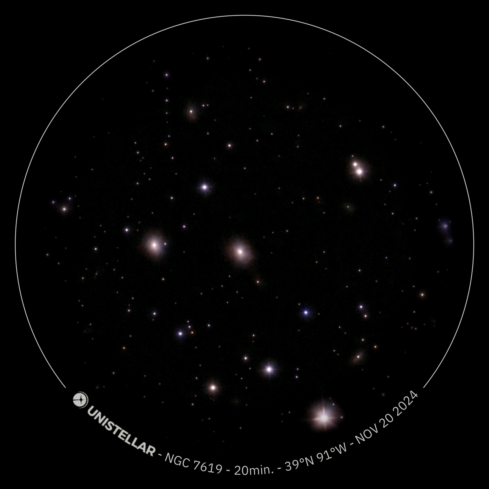
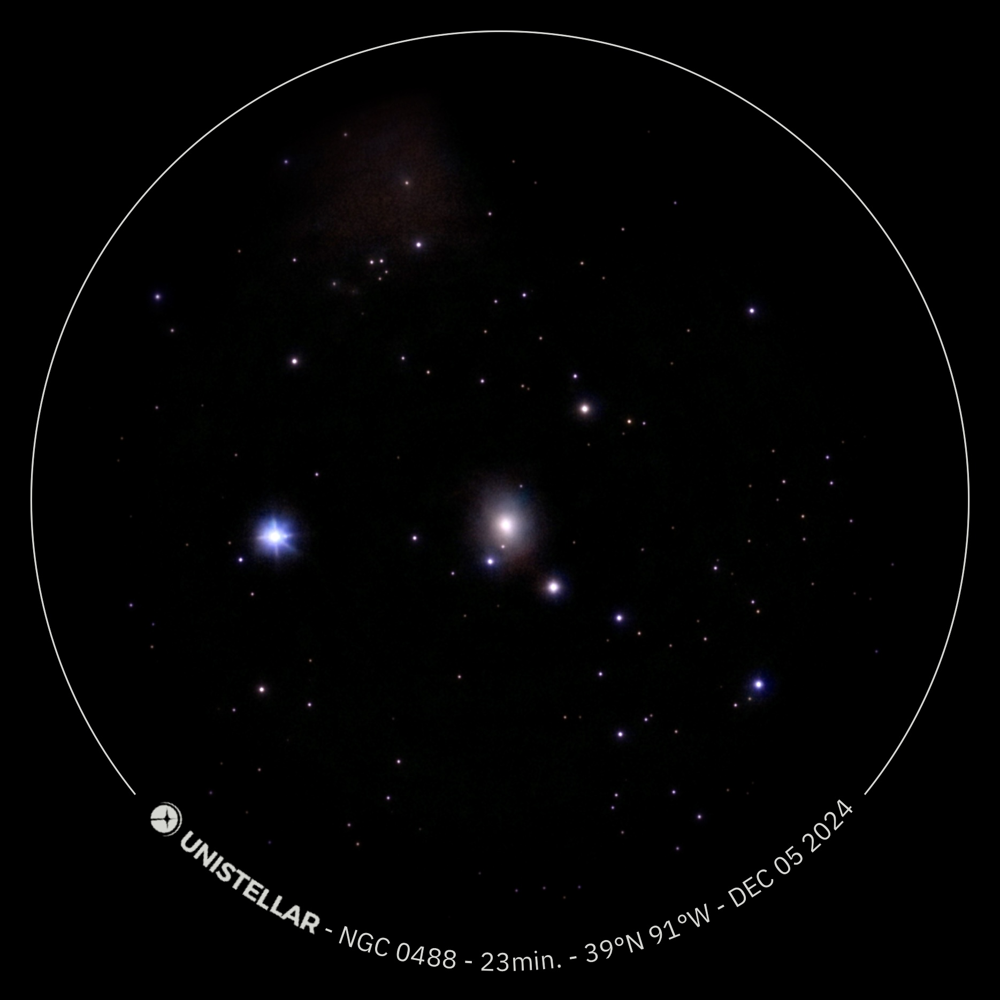
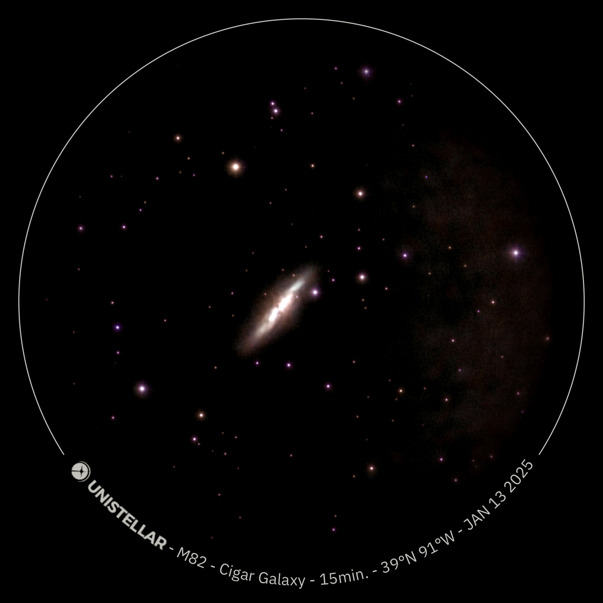

🌌 Astrophotography Odyssey ðŸŒ
Explore the wonders of the cosmos captured through the lens
by Sankar Raman
Table of Contents
- Jupiter with Moons
- M31 - Andromeda Galaxy
- Blue Oyster Nebula
- M27 - Dumbbell Nebula
- C/2023 A3 (Tsuchinshan-ATLAS)
- M57 - Ring Nebula
- Cat's Eye Nebula
- White Rose Cluster
- Crescent Nebula
- Western Veil Nebula
- Wizard Nebula (NGC 7380)
- Blinking Planetary Nebula (NGC 6826)
- NGC 1491
- Eastern Veil Nebula (NGC 6992/6995)
- NGC 6951
- NGC 7217
- NGC 7479
- NGC 7332
- Saturn
- Magic Carpet Nebula (NGC 7027)
- Crystal Ball Nebula (NGC 1514)
- NGC 0147
- Elephant's Trunk Nebula (IC 1396A)
- M74
- NGC 7619
- Little Saturn Nebula (NGC 7009)
- Pelican Nebula (IC 5070)
- NGC 7331
- Helix Nebula (NGC 7293)
- M81 - Bode's Galaxy
- NGC 6946 - Fireworks Galaxy
- IC 342 - Hidden Galaxy
- NGC 6217
- M33 - Triangulum Galaxy
- M110
- NGC 0488
- NGC 0520
- Flame Nebula (NGC 2024)
- NGC 7817
- Venus
- NGC 1055
- Sculptor Galaxy (NGC 253)
- NGC 7721
- NGC 7606
- NGC 1300
- Whale Galaxy (NGC 4631)
- Pacman Nebula (NGC 281)
- NGC 7129
- NGC 0891
- M1 - Crab Nebula
- M77
- Bubble Nebula (NGC 7635)
- NGC 1023
- NGC 2276
- Owl Cluster (NGC 457)
- M52
- h Persei & Chi Persei Double Cluster
- M103
- M37
- M38
- IC 1434
- NGC 0157
- M82 - Cigar Galaxy
- NGC 2403
- Cocoon Nebula (IC 5146)
- Mars
- Uranus
- Butterfly Nebula (NGC 6302)
- Christmas Tree Cluster (NGC 2264)
- Monkey Head Nebula (NGC 2174)
- M78
- M51 - Whirlpool Galaxy
- NGC 1569
- NGC 1502
- NGC 663
- NGC 1245
- NGC 1513
- NGC 0278
- NGC 1560
- NGC 0936
- NGC 1528
- California Nebula (NGC 1499)
- NGC 2261 Hubble's Variable Nebula
Jupiter with Moons

Jupiter is the fifth planet from the Sun and the largest in our Solar System. It is a gas giant with a mass more than two and a half times that of all the other planets in the Solar System combined. It is primarily composed of hydrogen and helium.
- Object Type: Gas Giant Planet
- Constellation: Changes as it moves through the zodiac constellations (currently in Taurus as of late 2024/early 2025)
- Magnitude: Varies, typically between -2.94 and -1.66 (one of the brightest objects in the night sky)
- Size: Diameter of 139,820 km (86,881 miles)
- Age: Approximately 4.5 billion years
- J2000 Coordinates: Varies significantly due to orbital motion.
- Best Time to Observe (Northern Hemisphere): When it is at or near opposition (when it is closest to Earth and fully illuminated by the Sun). This occurs roughly every 13 months.
- Discoverer: Known since ancient times; its four largest moons (Io, Europa, Ganymede, Callisto) were discovered by Galileo Galilei in 1610.
- Distance from Earth: Varies from 588 million km (365 million miles) to 968 million km (601 million miles).
Fun Facts:
- Jupiter has the shortest day of all the planets, rotating once every 9 hours and 55 minutes.
- Its Great Red Spot is a giant storm larger than Earth that has been raging for at least 350 years.
- Jupiter has 95 known moons, with the four largest (Galilean moons) being easily visible with a small telescope.
- It acts as a "cosmic vacuum cleaner," deflecting or absorbing many comets and asteroids that might otherwise hit inner planets.
M31 - Andromeda Galaxy

The Andromeda Galaxy (M31) is the closest large spiral galaxy to our Milky Way and is on a collision course with it. It is the most distant object visible to the naked eye under dark sky conditions.
- Object Type: Spiral Galaxy (SA(s)b)
- Constellation: Andromeda
- Magnitude: 3.4 (easily visible with binoculars, sometimes naked eye)
- Size: Approximately 220,000 light-years in diameter
- Age: Estimated to be around 10 billion years old.
- J2000 Coordinates: RA 00h 42m 44.3s | Dec +41° 16′ 09″
- Best Time to Observe (Northern Hemisphere): Autumn (September to November) when it is high in the night sky.
- Discoverer: First recorded by the Persian astronomer Abd al-Rahman al-Sufi in 964 AD. Charles Messier cataloged it as M31 in 1764.
- Distance from Earth: Approximately 2.537 million light-years.
Fun Facts:
- The Andromeda Galaxy is approaching the Milky Way at about 110 kilometers per second, and they are expected to collide in about 4.5 billion years.
- It contains about 1 trillion stars, roughly twice the number of stars in the Milky Way.
- Despite its immense size, only its bright core is visible to the naked eye.
- The collision with the Milky Way is not expected to destroy either galaxy but will form a new, larger elliptical galaxy often dubbed "Milkomeda."
Blue Oyster Nebula

The "Blue Oyster Nebula" is not a formally recognized astronomical object. This image likely refers to a lesser-known or informally named planetary nebula or a star-forming region that exhibits a blue hue, possibly due to ionized oxygen or reflection of blue light from hot, young stars. Without a formal catalog designation (like M, NGC, IC), specific details are hard to pinpoint. Given its appearance, it might be a small, distant planetary nebula.
- Object Type: Likely a Planetary Nebula or Reflection Nebula (informal name)
- Constellation: (Specific constellation unknown without formal identification)
- Magnitude: (Unknown/Very faint)
- Size: (Unknown, likely small angular size)
- Age: (Unknown, depends on object type)
- J2000 Coordinates: (Unknown without formal identification)
- Best Time to Observe (Northern Hemisphere): (Unknown, depends on location)
- Discoverer: (Unknown, likely an amateur or professional astrophotographer rather than a historical astronomer)
- Distance from Earth: (Unknown, likely several thousand light-years if a nebula)
Fun Facts:
- Many nebulae get their vivid colors from specific elements that glow when ionized by nearby stars, such as hydrogen (red), oxygen (blue-green), and sulfur (red).
- Planetary nebulae are the final stages of Sun-like stars, where the star sheds its outer layers into space.
- The informal naming of celestial objects by astrophotographers often reflects their unique visual appearance.
M27 - Dumbbell Nebula

The Dumbbell Nebula (M27 or NGC 6853) is a prominent and well-studied planetary nebula in the constellation Vulpecula. It was the first planetary nebula ever discovered and is a classic example of such an object, formed from the expelled outer layers of a dying star.
- Object Type: Planetary Nebula
- Constellation: Vulpecula
- Magnitude: 7.5 (visible with binoculars, small telescope reveals shape)
- Size: Approximately 2.8 light-years in diameter
- Age: Estimated to be around 9,800 years old (since its formation)
- J2000 Coordinates: RA 19h 59m 36.3s | Dec +22° 43′ 16″
- Best Time to Observe (Northern Hemisphere): Summer and early Autumn (July to October).
- Discoverer: Charles Messier in 1764.
- Distance from Earth: Approximately 1,360 light-years.
Fun Facts:
- Its name comes from its distinct double-lobed, or "dumbbell," shape.
- The central star of M27 is a white dwarf, one of the largest and brightest known.
- Planetary nebulae have nothing to do with planets; the term was coined because early astronomers thought they resembled gas giants through their telescopes.
C/2023 A3 (Tsuchinshan-ATLAS)
Comet C/2023 A3 (Tsuchinshan-ATLAS) is a long-period comet discovered in 2023. It garnered significant attention due to its potential to become a bright, naked-eye comet in late 2024. Its brightness depends heavily on its perihelion passage and how much dust and gas it expels.
- Object Type: Long-Period Comet
- Constellation: Changes significantly over time due to its orbit. (In this image, it would be in a specific constellation on Nov 05 2024)
- Magnitude: Highly variable, can range from very faint to potentially naked-eye brightness (e.g., predicted to be around magnitude 0-2 in October 2024).
- Size: Nucleus size typically a few kilometers (e.g., estimated 2-10 km). Coma and tail can extend millions of kilometers.
- Age: Formed with the Solar System, approximately 4.5 billion years.
- J2000 Coordinates: Constantly changing due to orbital motion.
- Best Time to Observe (Northern Hemisphere): Predicted to be best in October 2024, after perihelion and before closest approach to Earth.
- Discoverer: Discovered independently by the Purple Mountain Observatory (Tsuchinshan) in China and the ATLAS survey in South Africa in January 2023.
- Distance from Earth: Highly variable, ranging from hundreds of millions of kilometers to over a billion kilometers. At its closest approach to Earth in October 2024, it was about 70 million kilometers away.
Fun Facts:
- Comets are often called "dirty snowballs" because they are made of ice, dust, and rocky material.
- A comet's tail always points away from the Sun, regardless of the comet's direction of travel, due to solar wind and radiation pressure.
- Long-period comets originate from the Oort Cloud, a vast spherical shell of icy objects far beyond Neptune's orbit.
M57 - Ring Nebula

The Ring Nebula (M57 or NGC 6720) is a classic example of a planetary nebula located in the constellation Lyra. Its distinctive ring shape is due to the perspective from which we view the expanding shell of gas ejected by a dying star.
- Object Type: Planetary Nebula
- Constellation: Lyra
- Magnitude: 8.8 (requires a telescope to observe)
- Size: Approximately 1.3 light-years in diameter
- Age: Estimated to be around 6,000 to 8,000 years old.
- J2000 Coordinates: RA 18h 53m 35.1s | Dec +33° 01′ 45″
- Best Time to Observe (Northern Hemisphere): Summer (June to September).
- Discoverer: Antoine Darquier de Pellepoix in 1779. Independently discovered by Charles Messier shortly after.
- Distance from Earth: Approximately 2,300 light-years.
Fun Facts:
- The central star of the Ring Nebula is a white dwarf, which is incredibly hot and dense.
- The colors in the nebula are produced by different elements glowing: hydrogen (red), oxygen (blue-green), and nitrogen (red).
- The Ring Nebula is expanding at a rate of about 20-30 kilometers per second.
Cat's Eye Nebula
The Cat's Eye Nebula (NGC 6543) is one of the most complex planetary nebulae known, featuring intricate structures, knots, and jets. Its complexity suggests a more involved history than simple stellar mass loss, possibly involving a binary star system.
- Object Type: Planetary Nebula
- Constellation: Draco
- Magnitude: 9.8 (requires a moderate to large telescope)
- Size: Approximately 0.2 light-years in diameter (inner shell), with fainter halos extending further.
- Age: Estimated to be around 1,000 years old (since its formation).
- J2000 Coordinates: RA 17h 58m 33.4s | Dec +66° 37′ 59″
- Best Time to Observe (Northern Hemisphere): Summer and Autumn (July to November).
- Discoverer: William Herschel in 1786.
- Distance from Earth: Approximately 3,300 light-years.
Fun Facts:
- The Cat's Eye Nebula is notable for its ten concentric rings, or "shells," which are thought to be formed by periodic ejections of material from the central star.
- The central star is a very hot and luminous white dwarf, about 10,000 times brighter than our Sun.
- Its complex structure has led astronomers to believe that the central star may have a binary companion, influencing the shape of the ejected gas.
White Rose Cluster

The "White Rose Cluster" is an informal or poetic name, likely referring to an open star cluster that appears somewhat scattered or has a particular visual aesthetic. Without a formal catalog designation (like Messier, NGC, IC), specific astronomical details are difficult to provide. It might be a relatively young open cluster, as these tend to be less densely packed and still contain bright, hot stars.
- Object Type: Likely an Open Star Cluster (informal name)
- Constellation: (Specific constellation unknown without formal identification)
- Magnitude: (Unknown, likely around 6-9 if visible in amateur telescopes)
- Size: (Unknown, typically a few to tens of light-years in diameter)
- Age: (Unknown, open clusters are generally young, a few million to a few hundred million years)
- J2000 Coordinates: (Unknown without formal identification)
- Best Time to Observe (Northern Hemisphere): (Unknown, depends on location)
- Discoverer: (Unknown, likely an amateur or professional astrophotographer rather than a historical astronomer)
- Distance from Earth: (Unknown, open clusters can be hundreds to thousands of light-years away)
Fun Facts:
- Open clusters are groups of up to a few thousand stars that were formed from the same giant molecular cloud and are still gravitationally bound.
- Unlike globular clusters, open clusters are typically found in the spiral arms of galaxies.
- Over time, stars in open clusters tend to drift apart due to gravitational interactions with other stars and gas clouds.
Crescent Nebula
The Crescent Nebula (NGC 6888 or Caldwell 27) is an emission nebula located in the constellation Cygnus. It is formed by the strong stellar wind from a massive, hot Wolf-Rayet star (WR 136) interacting with and pushing away material previously shed by the star during an earlier red giant phase.
- Object Type: Emission Nebula
- Constellation: Cygnus
- Magnitude: 7.4 (requires a telescope, best with OIII filter)
- Size: Approximately 25 light-years across.
- Age: Estimated to be around 250,000 years old.
- J2000 Coordinates: RA 20h 12m 07.0s | Dec +38° 21′ 18″
- Best Time to Observe (Northern Hemisphere): Summer and early Autumn (July to October).
- Discoverer: William Herschel in 1792.
- Distance from Earth: Approximately 4,700 light-years.
Fun Facts:
- The bright star at the center of the Crescent Nebula, WR 136, is a Wolf-Rayet star, a rare type of massive, hot star that is rapidly losing mass through powerful stellar winds.
- The nebula's crescent shape is due to the interaction of this fast stellar wind with slower-moving material ejected earlier.
- Wolf-Rayet stars are thought to be precursors to some of the most powerful supernova explosions.
Western Veil Nebula

The Western Veil Nebula (NGC 6960, also known as the "Witch's Broom Nebula") is part of the much larger Cygnus Loop, a vast supernova remnant in the constellation Cygnus. This beautiful, delicate structure is the expanding shockwave from a star that exploded around 10,000 to 20,000 years ago.
- Object Type: Supernova Remnant (part of the Cygnus Loop)
- Constellation: Cygnus
- Magnitude: 7.0 (requires dark skies and a telescope, best with OIII filter)
- Size: The entire Cygnus Loop is about 3 degrees in diameter (60 light-years), the Western Veil is a portion of this.
- Age: Approximately 10,000 to 20,000 years old (since the supernova event).
- J2000 Coordinates: RA 20h 45m 58.1s | Dec +30° 43′ 03″
- Best Time to Observe (Northern Hemisphere): Summer and early Autumn (July to October).
- Discoverer: William Herschel in 1784.
- Distance from Earth: Approximately 2,400 light-years.
Fun Facts:
- The Cygnus Loop is one of the largest and brightest supernova remnants known.
- The intricate filaments of the Veil Nebula are formed as the shockwave from the supernova plows through interstellar gas and dust, heating it and causing it to glow.
- The star that exploded to create the Cygnus Loop was likely 20 times more massive than our Sun.
- The Western Veil is easily identifiable by the bright star 52 Cygni, which appears embedded within the nebula, though it is actually much closer and unrelated to the remnant.
Wizard Nebula (NGC 7380)

The Wizard Nebula (NGC 7380) is an open cluster of stars embedded within a larger emission nebula, located in the constellation Cepheus. The nebula's shape, reminiscent of a sorcerer, is sculpted by the powerful stellar winds and radiation from the young, hot stars within the cluster.
- Object Type: Open Cluster with Emission Nebula
- Constellation: Cepheus
- Magnitude: 7.2 (for the cluster, nebula is fainter)
- Size: Approximately 25 arcminutes in apparent diameter (about 100 light-years across)
- Age: Estimated to be around 4 million years old (for the cluster)
- J2000 Coordinates: RA 22h 47m 19s | Dec +58° 07′ 21″
- Best Time to Observe (Northern Hemisphere): Autumn (September to November) when Cepheus is high in the sky.
- Discoverer: Caroline Herschel in 1787.
- Distance from Earth: Approximately 7,000 light-years.
Fun Facts:
- The Wizard Nebula is an active star-forming region, with new stars still being born within its gas and dust.
- The dark lanes and pillars within the nebula are dense clouds of gas and dust that are resisting erosion from the intense radiation of the hot, young stars.
- It is often photographed in narrowband, which highlights the glowing hydrogen gas (red) and oxygen (blue-green).
Blinking Planetary Nebula (NGC 6826)

The Blinking Planetary Nebula (NGC 6826 or Caldwell 15) is a planetary nebula in the constellation Cygnus. It gets its popular name from the optical illusion that makes it appear to "blink" when viewed through a small telescope: the bright central star is so luminous that it overwhelms the surrounding nebula when viewed directly, but the nebula becomes visible with averted vision.
- Object Type: Planetary Nebula
- Constellation: Cygnus
- Magnitude: 8.8 (for the central star, nebula is fainter)
- Size: Approximately 0.45 light-years in diameter
- Age: Estimated to be around 2,000 years old.
- J2000 Coordinates: RA 19h 44m 48.2s | Dec +50° 31′ 30″
- Best Time to Observe (Northern Hemisphere): Summer (July to September).
- Discoverer: William Herschel in 1793.
- Distance from Earth: Approximately 2,000 to 5,500 light-years (estimates vary).
Fun Facts:
- The "blinking" effect is due to the contrast between the bright central star and the fainter nebula, and how our eyes perceive light differently with direct versus averted vision.
- NGC 6826 features two distinct bright patches, known as FLIERS (Fast Low-Ionization Emission Regions), which are moving outwards at supersonic speeds.
- The central star is an O-type star, which is extremely hot and luminous, driving a fast stellar wind that shapes the nebula.
NGC 1491

NGC 1491 (also known as Sh2-206 or the Fossil Footprint Nebula) is an emission nebula and a star-forming region located in the constellation Perseus. It is illuminated and shaped by the strong radiation from a hot, young star within its boundaries, creating a cavity-like structure.
- Object Type: Emission Nebula / H II Region
- Constellation: Perseus
- Magnitude: (Not typically given for nebulae, but the illuminating star is ~magnitude 11.2)
- Size: Approximately 9 x 6 arcminutes (apparent size)
- Age: (Age of nebula is not precisely known, but star formation is ongoing)
- J2000 Coordinates: RA 04h 03m 16s | Dec +51° 18′ 54″
- Best Time to Observe (Northern Hemisphere): Autumn and Winter (October to February).
- Discoverer: William Herschel in 1790.
- Distance from Earth: Approximately 9,800 to 10,700 light-years.
Fun Facts:
- The nebula is ionized by the star BD +50° 886, a massive, hot star that is carving out a "cave" in the surrounding gas.
- The informal name "Fossil Footprint Nebula" comes from its resemblance to a footprint, with the bright star at the "heel" area.
- Emission nebulae like NGC 1491 are often called "stellar nurseries" because they are places where new stars are born from collapsing clouds of gas and dust.
Eastern Veil Nebula (NGC 6992/6995)
The Eastern Veil Nebula (comprising NGC 6992 and NGC 6995) is a prominent part of the Cygnus Loop, a large supernova remnant in the constellation Cygnus. It is a stunning example of the aftermath of a massive star's death, with intricate, glowing filaments of gas expanding into interstellar space.
- Object Type: Supernova Remnant (part of the Cygnus Loop)
- Constellation: Cygnus
- Magnitude: 7.0 (for the brightest parts, requires dark skies and filters for best view)
- Size: The entire Cygnus Loop spans about 3 degrees (approx. 60 light-years); the Eastern Veil is a significant portion of this.
- Age: Approximately 10,000 to 20,000 years old (since the supernova event).
- J2000 Coordinates: RA 20h 56m 20s | Dec +31° 43′ 00″ (approx. for NGC 6992)
- Best Time to Observe (Northern Hemisphere): Summer and early Autumn (July to October).
- Discoverer: William Herschel in 1784.
- Distance from Earth: Approximately 2,400 light-years.
Fun Facts:
- The Eastern Veil's rope-like filaments are formed by thin shock waves viewed edge-on, where the fast-moving supernova debris collides with and heats the surrounding interstellar medium.
- The different colors in the nebula (reds, blues, greens) are produced by different elements glowing as they are excited by the shockwave, primarily hydrogen (red) and oxygen (blue-green).
- Supernova remnants like the Veil Nebula are crucial for enriching the interstellar medium with heavy elements, which are then used to form new stars and planets.
NGC 6951

NGC 6951 (also cataloged as NGC 6952) is a beautiful barred spiral galaxy located in the constellation Cepheus. It is known for its prominent stellar bar, distinct spiral arms, and an active galactic nucleus, which suggests the presence of a supermassive black hole at its center.
- Object Type: Barred Spiral Galaxy (SAB(rs)bc)
- Constellation: Cepheus
- Magnitude: 11.0 (requires a moderate telescope)
- Size: Approximately 100,000 to 114,300 light-years in diameter.
- Age: (Age of galaxy is billions of years, star formation in ring is millions of years)
- J2000 Coordinates: RA 20h 37m 14.1s | Dec +66° 06′ 20″
- Best Time to Observe (Northern Hemisphere): Autumn (September to November).
- Discoverer: Jérôme Eugène Coggia in 1877; independently by Lewis Swift in 1788.
- Distance from Earth: Approximately 75.25 million light-years.
Fun Facts:
- NGC 6951 is classified as a Seyfert galaxy, meaning its nucleus is very luminous and likely powered by a supermassive black hole actively accreting material.
- It features a circumnuclear ring of star formation, where new stars are being born at a rapid rate, suggesting gas inflow along the bar.
- Several supernovae have been observed in NGC 6951, including SN 1999el, SN 2000E, SN 2015G, SN 2020dpw, and SN 2021sjt.
NGC 7217

NGC 7217 is an unbarred spiral galaxy in the constellation Pegasus, notable for its unique structure including multiple concentric rings of stars and a large, massive spheroid. It is considered a "gas-poor" galaxy, yet shows evidence of ongoing star formation, particularly in its outermost ring.
- Object Type: Unbarred Spiral Galaxy (Sa)
- Constellation: Pegasus
- Magnitude: 10.1 (visible with a moderate telescope)
- Size: Approximately 70,000 light-years in diameter.
- Age: (Galaxy age is billions of years; stellar populations vary from intermediate to younger ages)
- J2000 Coordinates: RA 22h 08m 26.6s | Dec +31° 22′ 33″
- Best Time to Observe (Northern Hemisphere): Autumn (September to December).
- Discoverer: William Herschel in 1784.
- Distance from Earth: Approximately 50 million light-years.
Fun Facts:
- NGC 7217 is unusual because a significant number of its stars rotate in the opposite direction to the majority, suggesting a past merger with another galaxy.
- It has two distinct stellar populations: older stars in its inner regions and younger, metal-poor stars in its outer parts.
- Despite being gas-poor, its outermost ring is a region of active star formation.
NGC 7479

NGC 7479 is a striking barred spiral galaxy located in the constellation Pegasus. It is characterized by its prominent, S-shaped bar and distinct, sweeping spiral arms, one of which is notably brighter than the other, giving it an asymmetric appearance. It is also known for its active star formation regions.
- Object Type: Barred Spiral Galaxy (SB(s)c)
- Constellation: Pegasus
- Magnitude: 11.6 (requires a moderate to large telescope)
- Size: Approximately 100,000 light-years in diameter.
- Age: (Galaxy age is billions of years, star formation is ongoing)
- J2000 Coordinates: RA 23h 04m 56.7s | Dec +12° 19′ 23″
- Best Time to Observe (Northern Hemisphere): Autumn (September to December).
- Discoverer: William Herschel in 1784.
- Distance from Earth: Approximately 105 million light-years.
Fun Facts:
- NGC 7479 is sometimes called the "Propeller Galaxy" due to the appearance of its bar and spiral arms.
- It is a starburst galaxy, meaning it has a very high rate of star formation, particularly in its spiral arms.
- A supernova (SN 1990U, Type II) was observed in NGC 7479 in 1990.
NGC 7332

NGC 7332 is an edge-on lenticular galaxy located in the constellation Pegasus. It is a peculiar galaxy with a distinctive peanut-shell shaped bulge, indicative of a stellar bar seen from its side. It forms a gravitationally bound pair with the nearby spiral galaxy NGC 7339.
- Object Type: Lenticular Galaxy (S0 pec edge-on)
- Constellation: Pegasus
- Magnitude: 12.0 (requires a moderate telescope)
- Size: Approximately 4.1 x 1.1 arcminutes (apparent size)
- Age: (Galaxy age is billions of years)
- J2000 Coordinates: RA 22h 37m 24.5s | Dec +23° 47′ 54″
- Best Time to Observe (Northern Hemisphere): Autumn (September to December).
- Discoverer: William Herschel in 1784.
- Distance from Earth: Approximately 67.1 million light-years.
Fun Facts:
- NGC 7332 is an unusually blue lenticular galaxy, which is uncommon for S0 galaxies that typically have older, redder stellar populations.
- Its peanut-shaped bulge is a common feature in barred spiral galaxies when viewed edge-on, suggesting it might have had a bar in its past.
- It is part of a dynamically isolated binary system with NGC 7339, and they are likely orbiting each other.
Saturn
Saturn is the sixth planet from the Sun and the second-largest planet in our Solar System, famous for its magnificent ring system. It is a gas giant primarily composed of hydrogen and helium, with a small rocky core. Its rings are made of billions of small pieces of ice and rock.
- Object Type: Gas Giant Planet
- Constellation: Changes as it moves through the zodiac constellations.
- Magnitude: Varies, typically between 0.7 and -0.5.
- Size: Diameter of 116,460 km (72,367 miles) (excluding rings).
- Age: Approximately 4.5 billion years.
- J2000 Coordinates: Varies significantly due to orbital motion.
- Best Time to Observe (Northern Hemisphere): When it is at or near opposition (when it is closest to Earth and fully illuminated by the Sun). This occurs roughly every 12.5 months.
- Discoverer: Known since ancient times; its rings were first observed by Galileo Galilei in 1610, though he didn't recognize them as rings. Christiaan Huygens correctly identified them as rings in 1655.
- Distance from Earth: Varies from 1.2 billion km (746 million miles) to 1.7 billion km (1.05 billion miles).
Fun Facts:
- Saturn's rings are incredibly thin, typically only tens of meters thick, despite being hundreds of thousands of kilometers wide.
- It has 146 known moons, the most of any planet in our Solar System, with Titan being the second-largest moon in the entire Solar System.
- Saturn is the least dense planet in the Solar System; if you could find a bathtub big enough, Saturn would float!
- The Cassini-Huygens mission explored Saturn and its moons from 2004 to 2017, providing unprecedented data and images.
Magic Carpet Nebula (NGC 7027)

The Magic Carpet Nebula (NGC 7027), also known as the Jewel Bug Nebula, is a very young and dense planetary nebula located in the constellation Cygnus. It is one of the most extensively studied planetary nebulae due to its complex and unusual structure, which includes an elliptical region of ionized gas and an equatorial belt.
- Object Type: Planetary Nebula
- Constellation: Cygnus
- Magnitude: 10.0 (visually bright for a planetary nebula, appears star-like in small telescopes)
- Size: Approximately 0.2 x 0.1 light-years (unusually small)
- Age: Estimated to be around 600 years old (very young for a planetary nebula)
- J2000 Coordinates: RA 21h 07m 01.7s | Dec +42° 14′ 11″
- Best Time to Observe (Northern Hemisphere): Summer and early Autumn (July to October).
- Discoverer: Édouard Stephan in 1878.
- Distance from Earth: Approximately 3,000 light-years.
Fun Facts:
- NGC 7027 is one of the most massive planetary nebulae known, with its expanding halo containing about three times the mass of the Sun.
- Its complex shape is thought to be influenced by a suspected binary star system at its center.
- The nebula is rich in carbon and emits X-rays from its central regions, indicating very high temperatures.
Crystal Ball Nebula (NGC 1514)

The Crystal Ball Nebula (NGC 1514) is a planetary nebula located in the constellation Taurus. It is a double-shell nebula with a bright inner shell and a fainter, more extensive halo. Its discovery by William Herschel in 1790 challenged his understanding of nebulae, as it clearly showed a single star surrounded by a luminous atmosphere, rather than a cluster of unresolved stars.
- Object Type: Planetary Nebula
- Constellation: Taurus
- Magnitude: 9.27 (visible with a moderate telescope)
- Size: Approximately 2.2 arcminutes in apparent diameter (inner shell), with a larger faint halo.
- Age: (Age of nebula is not precisely known, but it's a relatively young planetary nebula)
- J2000 Coordinates: RA 04h 09m 16.9s | Dec +30° 46′ 33″
- Best Time to Observe (Northern Hemisphere): Autumn and Winter (October to March).
- Discoverer: William Herschel in 1790.
- Distance from Earth: Approximately 1,520 to 2,283 light-years (estimates vary).
Fun Facts:
- This nebula is surrounded by a vast region of dust, spanning about 8.5 light-years, which is visible in infrared observations.
- The central star of NGC 1514 is a binary system, consisting of a bright giant star and a hot, sub-luminous O-type star, which is the progenitor of the nebula.
- Its discovery played a significant role in changing astronomers' understanding of the nature of nebulae.
NGC 0147
NGC 0147 (also known as Caldwell 17) is a dwarf spheroidal galaxy located in the constellation Cassiopeia. It is a member of the Local Group of galaxies and is a distant satellite galaxy of the Andromeda Galaxy (M31). Like many dwarf spheroidal galaxies, it is diffuse and dim, making it a challenging object to observe.
- Object Type: Dwarf Spheroidal Galaxy
- Constellation: Cassiopeia
- Magnitude: 9.5 (requires a small telescope in dark skies)
- Size: Approximately 2.5 x 1.5 arcminutes (apparent size)
- Age: (Galaxy age is billions of years, notable for its elderly stellar population)
- J2000 Coordinates: RA 00h 33m 12.1s | Dec +48° 30′ 32″
- Best Time to Observe (Northern Hemisphere): Autumn (September to December).
- Discoverer: John Herschel in September 1829.
- Distance from Earth: Approximately 2.5 million light-years.
Fun Facts:
- NGC 147 is gravitationally bound to the Andromeda Galaxy, along with its brighter neighbor, NGC 185 (Caldwell 18).
- It is notable for its lack of young, hot stars and recent star formation, indicating an older stellar population.
- Dwarf spheroidal galaxies are the most common type of satellite galaxy found around larger galaxies like the Milky Way and Andromeda.
Elephant's Trunk Nebula (IC 1396A)
The Elephant's Trunk Nebula (IC 1396A) is a concentration of interstellar gas and dust within the much larger emission nebula IC 1396, located in the constellation Cepheus. Its distinctive shape, resembling an elephant's trunk, is sculpted by the powerful winds and radiation from a massive, hot star (HD 206267) located nearby.
- Object Type: Emission Nebula / Globule
- Constellation: Cepheus
- Magnitude: (Part of a larger complex, no single magnitude given, but relatively faint)
- Size: Approximately 20 light-years long (the trunk portion). The entire IC 1396 complex is over 3 degrees in diameter.
- Age: (Star formation is ongoing within the trunk, the larger complex is millions of years old)
- J2000 Coordinates: RA 21h 35m 35.6s | Dec +57° 28′ 53″
- Best Time to Observe (Northern Hemisphere): Summer and Autumn (July to November).
- Discoverer: (Part of IC 1396, discovered by Edward Barnard in 1893. The "trunk" feature is a more recent popular identification.)
- Distance from Earth: Approximately 2,400 light-years.
Fun Facts:
- The Elephant's Trunk Nebula is a stellar nursery, where new stars are actively forming within the dense pockets of gas and dust.
- The dark, finger-like structures within the nebula are called "elephant trunks" or "evaporating gaseous globules (EGGs)," which are denser regions that resist erosion and are often sites of star formation.
- It is part of a much larger and fainter nebula complex, IC 1396, which is illuminated by the supergiant star HD 206267.
M74
Messier 74 (M74 or NGC 628) is a magnificent face-on grand design spiral galaxy located in the constellation Pisces. It is known for its nearly perfect, symmetrical spiral arms, making it a classic example of its type. Its low surface brightness makes it a challenging object for amateur astronomers to observe visually.
- Object Type: Grand Design Spiral Galaxy (SA(s)c)
- Constellation: Pisces
- Magnitude: 10.0 (low surface brightness, difficult to observe visually)
- Size: Approximately 95,000 light-years in diameter.
- Age: (Galaxy age is billions of years)
- J2000 Coordinates: RA 01h 36m 41.8s | Dec +15° 47′ 01″
- Best Time to Observe (Northern Hemisphere): Autumn (September to December).
- Discoverer: Pierre Méchain in 1780. Charles Messier added it to his catalog in 1780.
- Distance from Earth: Approximately 32 million light-years.
Fun Facts:
- M74 is a popular target for supernova searches, with three supernovae having been observed in it since 2002.
- Its face-on orientation allows for a clear view of its spiral arm structure, which is rich in star-forming regions.
- Despite its large size, its light is spread out over a wide area, making it appear faint.
NGC 7619
NGC 7619 is a large elliptical galaxy located in the constellation Pegasus. It is one of the dominant and brightest members of the Pegasus galaxy cluster (also known as the Pegasus I cluster), forming a prominent pair with its neighboring elliptical galaxy, NGC 7626.
- Object Type: Elliptical Galaxy (E)
- Constellation: Pegasus
- Magnitude: 10.26 (visible with a moderate telescope)
- Size: Approximately 3.4 x 2.7 arcminutes (apparent size)
- Age: (Galaxy age is billions of years, typical for elliptical galaxies with older stellar populations)
- J2000 Coordinates: RA 23h 20m 14.4s | Dec +08° 09′ 09″
- Best Time to Observe (Northern Hemisphere): Autumn (September to December).
- Discoverer: William Herschel in 1785.
- Distance from Earth: Approximately 160 million light-years.
Fun Facts:
- NGC 7619 and its companion NGC 7626 are the two brightest galaxies in the Pegasus I cluster, making them a good target for observing galaxy interactions.
- Elliptical galaxies are generally thought to be formed from the mergers of smaller galaxies.
- These galaxies typically contain older stars and very little gas and dust, indicating a lack of recent star formation.
Little Saturn Nebula (NGC 7009)
The Little Saturn Nebula (NGC 7009 or Caldwell 55) is a beautiful planetary nebula located in the constellation Aquarius. It gets its popular name from its two ansae, or "handles," that extend from its sides, giving it a resemblance to the planet Saturn with its rings when viewed through a telescope.
- Object Type: Planetary Nebula
- Constellation: Aquarius
- Magnitude: 8.0 (visible with small telescopes, larger telescopes reveal more detail)
- Size: Approximately 0.4 light-years in diameter.
- Age: Estimated to be around 1,400 years old.
- J2000 Coordinates: RA 21h 04m 10.9s | Dec -11° 21′ 48″
- Best Time to Observe (Northern Hemisphere): Late Summer and Autumn (August to November).
- Discoverer: William Herschel in 1782.
- Distance from Earth: Approximately 1,400 to 5,000 light-years (estimates vary).
Fun Facts:
- The central star of the Little Saturn Nebula is a very hot white dwarf, which is the remnant of a Sun-like star.
- The nebula exhibits intricate structures, including an elliptical inner shell, an outer shell, and a halo, all shaped by stellar winds.
- The green and blue colors in the nebula are primarily due to glowing oxygen and hydrogen.
Pelican Nebula (IC 5070)
The Pelican Nebula (IC 5070) is a large emission nebula located in the constellation Cygnus. It is part of the same large star-forming region as the more famous North America Nebula (NGC 7000) and is separated from it by a dark cloud of molecular dust. Its distinctive shape resembles a pelican, giving it its popular name.
- Object Type: Emission Nebula / H II Region
- Constellation: Cygnus
- Magnitude: (No single magnitude, as it's a diffuse nebula, but generally faint)
- Size: Spans about 30 light-years.
- Age: (Star formation is ongoing, the nebula itself is millions of years old)
- J2000 Coordinates: RA 20h 56m 00s | Dec +44° 21′ 00″ (approx.)
- Best Time to Observe (Northern Hemisphere): Summer and early Autumn (July to October).
- Discoverer: Max Wolf in 1890.
- Distance from Earth: Approximately 1,500 to 2,000 light-years.
Fun Facts:
- The Pelican Nebula is an active site of star formation, with young, hot stars illuminating the gas and dust.
- The dark lanes and sculpted shapes within the nebula are caused by stellar winds and radiation from these new stars eroding the surrounding gas and dust.
- It is often photographed in conjunction with the North America Nebula due to their proximity and shared star-forming complex.
NGC 7331
NGC 7331 (also known as Caldwell 30) is a majestic unbarred spiral galaxy located in the constellation Pegasus. It is often referred to as "the Milky Way's twin" due to its similar size and structure, although it is not a true twin as it lacks a central bar. It is the brightest member of the NGC 7331 Group of galaxies.
- Object Type: Unbarred Spiral Galaxy (Sb)
- Constellation: Pegasus
- Magnitude: 10.4 (visible with a moderate telescope)
- Size: Approximately 120,000 light-years in diameter.
- Age: (Galaxy age is billions of years)
- J2000 Coordinates: RA 22h 37m 04.1s | Dec +34° 24′ 56″
- Best Time to Observe (Northern Hemisphere): Autumn (September to December).
- Discoverer: William Herschel in 1784.
- Distance from Earth: Approximately 40 million light-years.
Fun Facts:
- NGC 7331 is a classic example of an unbarred spiral galaxy, with well-defined spiral arms.
- It is surrounded by several much fainter background galaxies, often referred to as the "Flocculent Group" or "Deer Lick Group," which appear close to it in the sky but are much more distant.
- Despite its "twin" nickname, recent studies suggest it has a much larger central bulge than the Milky Way.
Helix Nebula (NGC 7293)

The Helix Nebula (NGC 7293 or Caldwell 63) is one of the closest and most iconic planetary nebulae to Earth, located in the constellation Aquarius. Its appearance, resembling a helix or a giant eye, is due to the perspective from which we view the expanding shell of gas ejected by a dying Sun-like star.
- Object Type: Planetary Nebula
- Constellation: Aquarius
- Magnitude: 7.6 (visible with binoculars, detailed with a telescope)
- Size: Approximately 2.5 to 3 light-years in diameter.
- Age: Estimated to be around 10,600 years old.
- J2000 Coordinates: RA 22h 29m 38.5s | Dec -20° 50′ 13″
- Best Time to Observe (Northern Hemisphere): Late Summer and Autumn (August to November).
- Discoverer: Karl Ludwig Harding (most likely before 1824).
- Distance from Earth: Approximately 650 light-years.
Fun Facts:
- The Helix Nebula is famous for its "cometary knots," which are dense, finger-like structures of gas and dust that extend radially away from the central star.
- It is sometimes referred to as the "Eye of God" or "Eye of Sauron" due to its striking appearance.
- The central star is a white dwarf, the remnant core of the star that created the nebula.
M81 - Bode's Galaxy

Bode's Galaxy (M81 or NGC 3031) is a grand design spiral galaxy located in the constellation Ursa Major. It is one of the brightest galaxies in the night sky and is part of the M81 Group, a group of galaxies that also includes its interacting companion, M82 (the Cigar Galaxy).
- Object Type: Grand Design Spiral Galaxy (SA(s)ab)
- Constellation: Ursa Major
- Magnitude: 6.9 (visible with binoculars, well-resolved with a small telescope)
- Size: Approximately 70,000 to 90,000 light-years in diameter.
- Age: (Galaxy age is billions of years)
- J2000 Coordinates: RA 09h 55m 33.2s | Dec +69° 03′ 55″
- Best Time to Observe (Northern Hemisphere): Spring (March to May) when it is high in the northern sky.
- Discoverer: Johann Elert Bode in 1774. Charles Messier added it to his catalog in 1781.
- Distance from Earth: Approximately 11.6 to 12 million light-years.
Fun Facts:
- M81 is gravitationally interacting with M82, causing bursts of star formation in M82 and influencing the spiral arm structure of M81.
- It is a popular target for amateur astronomers due to its brightness and well-defined spiral arms.
- M81 is one of the largest galaxies in the M81 Group, which is the closest group of galaxies to our Local Group after the Andromeda Group.
NGC 6946 - Fireworks Galaxy
The Fireworks Galaxy (NGC 6946) is a beautiful face-on intermediate spiral galaxy located near the border of the constellations Cepheus and Cygnus. It earned its nickname due to the exceptionally high number of supernovae observed within its arms—ten in the last century alone, making it a "supernova factory."
- Object Type: Intermediate Spiral Galaxy (SAB(rs)cd)
- Constellation: Cepheus / Cygnus (straddles the border)
- Magnitude: 9.6 (visible with a moderate telescope)
- Size: Approximately 40,000 light-years in diameter.
- Age: (Galaxy age is billions of years, but active star formation is ongoing)
- J2000 Coordinates: RA 20h 34m 52.3s | Dec +60° 09′ 14″
- Best Time to Observe (Northern Hemisphere): Autumn (September to November).
- Discoverer: William Herschel in 1790.
- Distance from Earth: Approximately 22 million light-years.
Fun Facts:
- NGC 6946 has hosted ten supernovae in the last century, far more than the Milky Way's average of about one per century.
- Its face-on orientation provides an excellent view of its intricate spiral arm structure and numerous star-forming regions.
- Despite its high supernova rate, it is not considered a starburst galaxy, but rather a "normal" galaxy with an unusually high rate of massive star deaths.
IC 342 - Hidden Galaxy
IC 342 (also known as Caldwell 5) is a large intermediate spiral galaxy located in the constellation Camelopardalis. It is famously known as the "Hidden Galaxy" because it lies behind a thick veil of stars, gas, and dust in our own Milky Way's galactic plane, making it challenging to observe despite its intrinsic brightness.
- Object Type: Intermediate Spiral Galaxy (SAB(rs)cd)
- Constellation: Camelopardalis
- Magnitude: 9.1 (difficult to observe visually due to obscuration)
- Size: Approximately 75,000 to 150,000 light-years in diameter.
- Age: (Galaxy age is billions of years, active star formation in the core)
- J2000 Coordinates: RA 03h 46m 48.5s | Dec +68° 05′ 46″
- Best Time to Observe (Northern Hemisphere): Autumn and Winter (October to February).
- Discoverer: William Frederick Denning in 1892.
- Distance from Earth: Approximately 7 to 11 million light-years (estimates vary).
Fun Facts:
- If it weren't for the obscuring dust and gas in our Milky Way, IC 342 would be one of the brightest galaxies in our night sky, potentially visible to the naked eye.
- Its core is an HII nucleus, indicating the presence of ionized hydrogen and active star formation.
- IC 342 is a member of the IC 342/Maffei Group, one of the closest galaxy groups to our Local Group.
NGC 6217
NGC 6217 is a barred spiral galaxy located in the constellation Ursa Minor. It is a relatively small but active galaxy, characterized by its prominent central bar and distinct spiral arms where star formation is taking place. It is visible as an 11th magnitude object in amateur telescopes.
- Object Type: Barred Spiral Galaxy (SBbc)
- Constellation: Ursa Minor
- Magnitude: 11.2 (visible with a 4-inch or larger telescope)
- Size: Approximately 30,000 to 40,000 light-years in diameter.
- Age: (Galaxy age is billions of years, with ongoing star formation)
- J2000 Coordinates: RA 16h 32m 39.0s | Dec +78° 11′ 50″
- Best Time to Observe (Northern Hemisphere): Spring and Summer (April to August), as it is circumpolar for many northern observers.
- Discoverer: William Herschel in 1790.
- Distance from Earth: Approximately 67 million light-years.
Fun Facts:
- NGC 6217 is classified as a Seyfert galaxy, indicating that it has an active galactic nucleus powered by a supermassive black hole.
- Its central bar is thought to play a role in funneling gas and dust towards the galaxy's core, fueling star formation and the active nucleus.
- The galaxy is located relatively close to the North Celestial Pole, making it a challenging but rewarding target for northern hemisphere astrophotographers.
M33 - Triangulum Galaxy
The Triangulum Galaxy (M33 or NGC 598) is a spiral galaxy located in the constellation Triangulum. It is the third-largest member of our Local Group of galaxies, after the Andromeda Galaxy and the Milky Way. M33 is a grand design spiral galaxy, known for its well-defined and sprawling spiral arms, which are rich in star-forming regions.
- Object Type: Spiral Galaxy (SA(s)cd)
- Constellation: Triangulum
- Magnitude: 5.7 (visible to the naked eye under very dark skies, easily with binoculars)
- Size: Approximately 60,000 light-years in diameter.
- Age: (Galaxy age is billions of years, active star formation is ongoing)
- J2000 Coordinates: RA 01h 33m 50.9s | Dec +30° 39′ 36″
- Best Time to Observe (Northern Hemisphere): Autumn (September to December).
- Discoverer: Giovanni Battista Hodierna (before 1654); independently by Charles Messier in 1764.
- Distance from Earth: Approximately 2.723 million light-years.
Fun Facts:
- M33 is one of the few galaxies that can be seen with the naked eye, appearing as a faint, diffuse patch of light.
- It contains numerous bright H II regions (regions of ionized hydrogen where new stars are forming), including NGC 604, one of the largest known star-forming regions in the Local Group.
- M33 is believed to be a satellite galaxy of the Andromeda Galaxy (M31) or at least gravitationally interacting with it.
M110
Messier 110 (M110 or NGC 205) is a dwarf elliptical galaxy that is a satellite of the Andromeda Galaxy (M31) and a member of our Local Group of galaxies. Despite its classification as an elliptical galaxy, it shows some evidence of recent star formation and contains dust lanes, which are unusual for typical ellipticals.
- Object Type: Dwarf Elliptical Galaxy (dE5 pec)
- Constellation: Andromeda
- Magnitude: 8.0 (visible with binoculars or a small telescope)
- Size: Approximately 17,000 light-years in diameter.
- Age: (Galaxy age is billions of years)
- J2000 Coordinates: RA 00h 40m 22.1s | Dec +41° 41′ 07″
- Best Time to Observe (Northern Hemisphere): Autumn (September to November) when Andromeda is high in the sky.
- Discoverer: Charles Messier (observed in 1773, but added to his catalog by his assistant Pierre Méchain in 1780 and later by Caroline Herschel in 1783). Officially added as M110 in 1966.
- Distance from Earth: Approximately 2.69 million light-years.
Fun Facts:
- M110 is one of the two brightest satellite galaxies of Andromeda, the other being M32.
- Unlike most elliptical galaxies, M110 contains a significant amount of dust and some young, blue stars, suggesting a more recent history of star formation than typically expected.
- It is often seen in wide-field images alongside the Andromeda Galaxy.
NGC 0488
NGC 0488 is a face-on spiral galaxy located in the constellation Pisces. It is considered a prototype galaxy with multiple, tightly wound spiral arms and a large central bulge. Star-forming activity has been observed within its arms, and its nucleus shows unusual chemical properties.
- Object Type: Spiral Galaxy (SA(r)b)
- Constellation: Pisces
- Magnitude: 10.4 (visible with a moderate telescope)
- Size: Approximately 185,800 light-years in diameter.
- Age: (Galaxy age is billions of years, with ongoing star formation)
- J2000 Coordinates: RA 01h 21m 46.7s | Dec +05° 15′ 24″
- Best Time to Observe (Northern Hemisphere): Autumn (September to December).
- Discoverer: William Herschel in 1784.
- Distance from Earth: Approximately 90 to 98.3 million light-years.
Fun Facts:
- NGC 0488 is known for its chemically decoupled nucleus, which is twice as metal-rich as the galaxy's central bulge.
- Two supernovae, SN 1976G and SN 2010eb, have been observed in this galaxy.
- It is a relatively isolated galaxy, forming a small group with a few smaller companions.
NGC 0520
NGC 0520 (also known as Arp 157) is a pair of interacting disk galaxies in the constellation Pisces, currently in the middle stages of a merger. It features an odd-looking tail of stars and a prominent dust lane, giving it a peculiar and disturbed appearance. It is one of the brightest interacting galaxy pairs in the sky.
- Object Type: Interacting/Merging Galaxies
- Constellation: Pisces
- Magnitude: 12.2 (visible with a small telescope, appears comet-like)
- Size: Approximately 100,000 light-years across.
- Age: (The merger began about 300 million years ago)
- J2000 Coordinates: RA 01h 24m 35.4s | Dec +03° 47′ 54″
- Best Time to Observe (Northern Hemisphere): Autumn (September to December).
- Discoverer: William Herschel in 1786.
- Distance from Earth: Approximately 100 million light-years.
Fun Facts:
- NGC 0520 is a prime example of a galaxy merger in progress, where the disks have coalesced but the nuclei have not yet merged.
- Its peculiar shape is a direct result of the gravitational forces tearing and distorting the two original galaxies.
- Interacting galaxies like NGC 0520 are important for understanding galaxy evolution and the formation of larger structures in the universe.
Flame Nebula (NGC 2024)
The Flame Nebula (NGC 2024 or Sh2-277) is a large emission nebula located in the constellation Orion, part of the larger Orion Molecular Cloud Complex. It is illuminated by the powerful ultraviolet radiation from a hot, young O-type star within its core, and its dark lanes of dust give it a fiery, flame-like appearance.
- Object Type: Emission Nebula / H II Region
- Constellation: Orion
- Magnitude: 10.0 (visible with a moderate telescope, best with filters)
- Size: Approximately 6 light-years in radius (about 30 arcminutes in apparent size).
- Age: Less than 1 million years old (active star formation).
- J2000 Coordinates: RA 05h 41m 54s | Dec -01° 51′ 00″
- Best Time to Observe (Northern Hemisphere): Winter (November to March).
- Discoverer: William Herschel in 1786.
- Distance from Earth: Approximately 1,350 to 1,400 light-years.
Fun Facts:
- The Flame Nebula is a very active star-forming region, containing a cluster of young stars, including brown dwarfs, which are "failed stars."
- The bright star Alnitak (Zeta Orionis), the easternmost star in Orion's Belt, appears very close to the Flame Nebula in the sky, but they are not physically associated.
- The dark lanes within the nebula are dense clouds of dust and gas that obscure the light from stars behind them.
NGC 7817
NGC 7817 is a spiral galaxy located in the constellation Pegasus. It is an edge-on spiral galaxy, meaning we view it from its side, allowing us to see its flattened disk and central bulge. It is a relatively faint object, requiring a moderate telescope for observation.
- Object Type: Spiral Galaxy (Sb)
- Constellation: Pegasus
- Magnitude: 10.27 (requires a moderate telescope)
- Size: (Apparent size approx. 3.0 x 0.6 arcminutes, physical size not readily available but typical for spirals)
- Age: (Galaxy age is billions of years)
- J2000 Coordinates: RA 00h 03m 57.0s | Dec +22° 11′ 40″
- Best Time to Observe (Northern Hemisphere): Autumn (September to December).
- Discoverer: William Herschel in 1785.
- Distance from Earth: Approximately 150 to 160 million light-years.
Fun Facts:
- Edge-on galaxies like NGC 7817 are excellent for studying the distribution of dust lanes and the thickness of galactic disks.
- While not as famous as some other galaxies, it is a rewarding target for astrophotographers due to its distinct edge-on profile.
- Its precise distance is still a subject of ongoing research, with various estimates available.
Venus
Venus is the second planet from the Sun and is often referred to as Earth's "sister planet" due to its similar size and mass. However, its surface conditions are vastly different, with an extremely hot and dense atmosphere dominated by carbon dioxide, leading to a runaway greenhouse effect.
- Object Type: Terrestrial Planet
- Constellation: Changes as it moves through the zodiac constellations.
- Magnitude: Varies, typically between -3.8 and -4.9 (one of the brightest objects in the sky after the Sun and Moon).
- Size: Diameter of 12,104 km (7,521 miles).
- Age: Approximately 4.5 billion years.
- J2000 Coordinates: Varies significantly due to orbital motion.
- Best Time to Observe (Northern Hemisphere): When it is at its greatest elongation from the Sun (either morning or evening sky).
- Discoverer: Known since ancient times.
- Distance from Earth: Varies from 38 million km (24 million miles) to 261 million km (162 million miles).
Fun Facts:
- Venus rotates in the opposite direction to most planets in our Solar System (retrograde rotation), meaning the Sun rises in the west and sets in the east.
- A day on Venus is longer than its year (243 Earth days to rotate, 225 Earth days to orbit the Sun).
- Its surface temperature is hot enough to melt lead, averaging around 462°C (864°F).
- Venus is shrouded by thick, toxic clouds of sulfuric acid, making direct visual observation of its surface impossible from Earth.
NGC 1055
NGC 1055 is an edge-on spiral galaxy located in the constellation Cetus. It is part of a binary system with the brighter spiral galaxy M77 (NGC 1068). NGC 1055 is notable for its prominent nuclear bulge, which is crossed by a wide, knotty dark lane of dust and gas, and its slightly warped disk, likely caused by gravitational interaction with M77.
- Object Type: Edge-on Spiral Galaxy (Sb)
- Constellation: Cetus
- Magnitude: 11.4 (visible with a moderate telescope)
- Size: Approximately 150,000 to 170,000 light-years in diameter (estimated to be larger than the Milky Way).
- Age: (Galaxy age is billions of years)
- J2000 Coordinates: RA 02h 41m 45.4s | Dec +00° 26′ 37″
- Best Time to Observe (Northern Hemisphere): Autumn and Winter (October to February).
- Discoverer: William Herschel in 1783.
- Distance from Earth: Approximately 55 million light-years.
Fun Facts:
- The warped appearance of NGC 1055's disk is a clear sign of its gravitational interaction with its larger neighbor, M77.
- Edge-on galaxies provide a unique perspective for studying the distribution of dust and gas within a galaxy's disk.
- It is a member of the M77 Group of galaxies.
Sculptor Galaxy (NGC 253)
The Sculptor Galaxy (NGC 253 or Caldwell 65), also known as the Silver Coin or Silver Dollar Galaxy, is a prominent intermediate spiral galaxy located in the constellation Sculptor. It is a starburst galaxy, undergoing a period of intense star formation, particularly in its central regions, and is the largest member of the Sculptor Group of galaxies.
- Object Type: Intermediate Spiral Galaxy (SAB(s)c) / Starburst Galaxy
- Constellation: Sculptor
- Magnitude: 8.0 (visible with binoculars, well-resolved with a small telescope)
- Size: Approximately 70,000 to 120,000 light-years in diameter.
- Age: (Galaxy age is billions of years, but intense star formation is ongoing)
- J2000 Coordinates: RA 00h 47m 33.1s | Dec -25° 17′ 17″
- Best Time to Observe (Northern Hemisphere): Autumn (September to December), though it is a southern hemisphere object.
- Discoverer: Caroline Herschel in 1783.
- Distance from Earth: Approximately 11.4 million light-years.
Fun Facts:
- The Sculptor Galaxy is one of the brightest spiral galaxies visible from Earth and is the closest starburst galaxy to us.
- Its starburst activity is so intense that it drives a "superwind" of gas and dust out into its halo.
- It is known to be a strong source of high-energy X-rays and gamma rays, likely due to massive black holes near its center.
NGC 7721
NGC 7721 is a spiral galaxy located in the constellation Aquarius. It is a relatively faint and distant galaxy, appearing as a small, elongated smudge in amateur telescopes. It is a typical spiral galaxy with a central bulge and discernible spiral arms.
- Object Type: Spiral Galaxy (Sc)
- Constellation: Aquarius
- Magnitude: 11.6 (requires a moderate telescope)
- Size: Approximately 70,000 light-years in diameter.
- Age: (Galaxy age is billions of years)
- J2000 Coordinates: RA 23h 38m 53.0s | Dec -06° 44′ 00″
- Best Time to Observe (Northern Hemisphere): Late Summer and Autumn (August to November).
- Discoverer: William Herschel in 1785.
- Distance from Earth: Approximately 79 million light-years.
Fun Facts:
- NGC 7721 is part of a small group of galaxies.
- While not a "grand design" spiral, its arms contain regions of ongoing star formation.
- Observing faint galaxies like NGC 7721 requires dark skies and good observing conditions.
NGC 7606
NGC 7606 is a spiral galaxy located in the constellation Aquarius. It is a large and relatively bright spiral galaxy, seen nearly face-on, revealing its distinct spiral arm structure. It is a member of a small galaxy group.
- Object Type: Spiral Galaxy (Sbc)
- Constellation: Aquarius
- Magnitude: 10.8 (visible with a moderate telescope)
- Size: Approximately 165,000 light-years in diameter.
- Age: (Galaxy age is billions of years)
- J2000 Coordinates: RA 23h 19m 05.0s | Dec -08° 29′ 00″
- Best Time to Observe (Northern Hemisphere): Late Summer and Autumn (August to November).
- Discoverer: William Herschel in 1785.
- Distance from Earth: Approximately 100 million light-years.
Fun Facts:
- NGC 7606 is a good example of a spiral galaxy with well-defined arms extending from its central bulge.
- It has been a target for studies on galaxy dynamics and star formation.
- Despite its large size, it is often overlooked compared to more famous galaxies, but offers a rewarding view for observers.
NGC 1300
NGC 1300 is a magnificent barred spiral galaxy located in the constellation Eridanus. It is a classic example of a grand design barred spiral, featuring a prominent central bar and two sweeping spiral arms that emerge from its ends. It is a member of the Eridanus Cluster of galaxies.
- Object Type: Barred Spiral Galaxy (SB(s)bc)
- Constellation: Eridanus
- Magnitude: 11.4 (requires a moderate telescope)
- Size: Approximately 130,000 light-years in diameter.
- Age: (Galaxy age is billions of years)
- J2000 Coordinates: RA 03h 19m 41.1s | Dec -19° 24′ 41″
- Best Time to Observe (Northern Hemisphere): Winter (November to March), though it is a southern hemisphere object.
- Discoverer: John Herschel in 1835.
- Distance from Earth: Approximately 61 to 65 million light-years.
Fun Facts:
- NGC 1300 is considered a "textbook" example of a barred spiral galaxy, often used in studies of galaxy morphology.
- Its central bar is thought to channel gas and dust towards the galactic center, potentially fueling a supermassive black hole, though no active nucleus has been detected.
- The galaxy's spiral arms are rich in blue star-forming regions.
Whale Galaxy (NGC 4631)
The Whale Galaxy (NGC 4631 or Caldwell 32) is a large, edge-on barred spiral galaxy located in the constellation Canes Venatici. Its slightly distorted, wedge-shaped appearance gives it the resemblance of a cosmic whale, hence its popular nickname. It is interacting with a smaller companion galaxy, NGC 4627.
- Object Type: Barred Spiral Galaxy (SB(s)cd) / Interacting Galaxy
- Constellation: Canes Venatici
- Magnitude: 9.8 (visible with a moderate telescope)
- Size: Approximately 100,000 to 140,000 light-years in diameter.
- Age: (Galaxy age is billions of years, active star formation is ongoing)
- J2000 Coordinates: RA 12h 42m 07.6s | Dec +32° 32′ 29″
- Best Time to Observe (Northern Hemisphere): Spring (March to June).
- Discoverer: William Herschel in 1787.
- Distance from Earth: Approximately 25 to 30 million light-years.
Fun Facts:
- The Whale Galaxy is a starburst galaxy, with intense star formation occurring in its central regions.
- It is surrounded by a large halo of hot gas that emits X-rays, likely due to the starburst activity and interaction with its companion.
- Its distorted shape is a result of gravitational interactions with its satellite galaxy, NGC 4627, and a nearby dwarf irregular galaxy, NGC 4656/4657 (the Hockey Stick Galaxy).
Pacman Nebula (NGC 281)
The Pacman Nebula (NGC 281) is an emission nebula and H II region located in the constellation Cassiopeia. It gets its popular name from its resemblance to the character from the classic video game. It is an active star-forming region, with young, hot stars ionizing the surrounding gas and dust.
- Object Type: Emission Nebula / H II Region
- Constellation: Cassiopeia
- Magnitude: 7.0 (visible with a moderate telescope, best with filters)
- Size: Approximately 48 light-years across (about 18 arcminutes in apparent size).
- Age: (Active star formation is ongoing, the nebula itself is millions of years old)
- J2000 Coordinates: RA 00h 52m 48s | Dec +56° 37′ 00″
- Best Time to Observe (Northern Hemisphere): Autumn and Winter (September to February).
- Discoverer: Edward Emerson Barnard in 1883.
- Distance from Earth: Approximately 9,200 light-years.
Fun Facts:
- The Pacman Nebula contains a small open cluster of stars, IC 1590, whose massive, hot stars are responsible for ionizing the nebula's gas.
- Dark lanes and pillars of dust within the nebula are sites where new stars are still forming.
- It is part of the Perseus Arm of our Milky Way galaxy.
NGC 7129
NGC 7129 is a beautiful reflection nebula located in the constellation Cepheus. It is illuminated by a young open cluster of stars embedded within it, whose light is reflected by the surrounding dust. The nebula has a rosebud-like appearance in some infrared images, indicating active star formation.
- Object Type: Reflection Nebula / Young Open Cluster
- Constellation: Cepheus
- Magnitude: 11.5 (faint, requires a moderate telescope)
- Size: Approximately 10 light-years across (about 7 arcminutes in apparent size).
- Age: Less than 1 million years old (for the young stars).
- J2000 Coordinates: RA 21h 42m 58s | Dec +66° 06′ 47″
- Best Time to Observe (Northern Hemisphere): Autumn (September to November).
- Discoverer: William Herschel in 1794.
- Distance from Earth: Approximately 3,300 light-years.
Fun Facts:
- NGC 7129 contains over 130 young stars, some of which are still sending out jets of supersonic gas into the surrounding molecular cloud.
- The reddish hues seen in infrared images are produced by glowing dust grains heated by the intense light from the embedded young stars.
- Our own Sun may have formed billions of years ago in a cluster similar to NGC 7129.
NGC 0891
NGC 0891 (also known as Caldwell 23, the Silver Sliver Galaxy, or the Outer Limits Galaxy) is a stunning edge-on unbarred spiral galaxy located in the constellation Andromeda. It is considered a near twin to our own Milky Way galaxy in terms of size and luminosity, offering a spectacular view of a galactic disk seen from its side, complete with a prominent dust lane.
- Object Type: Edge-on Unbarred Spiral Galaxy (SA(s)b?)
- Constellation: Andromeda
- Magnitude: 9.93 to 10.8 (visible with a moderate telescope, dust lane visible in larger apertures)
- Size: Approximately 120,000 to 130,700 light-years in diameter.
- Age: (Galaxy age is billions of years)
- J2000 Coordinates: RA 02h 22m 33.4s | Dec +42° 20′ 57″
- Best Time to Observe (Northern Hemisphere): Autumn (September to December).
- Discoverer: William Herschel in 1784.
- Distance from Earth: Approximately 27.3 to 30 million light-years.
Fun Facts:
- NGC 0891 is one of the best examples of an edge-on spiral galaxy, often used to illustrate what our Milky Way might look like from an external perspective.
- It features unusual filamentary patterns of dust extending into its halo, possibly caused by supernova explosions or light pressure from stars.
- A supernova (SN 1986J) was discovered in NGC 0891 in 1986.
M1 - Crab Nebula
The Crab Nebula (M1 or NGC 1952) is a supernova remnant and pulsar wind nebula located in the constellation Taurus. It is the result of a massive star that exploded as a supernova in 1054 AD, an event that was widely observed and recorded by Chinese astronomers. It is one of the most studied objects in astronomy.
- Object Type: Supernova Remnant / Pulsar Wind Nebula
- Constellation: Taurus
- Magnitude: 8.4 (visible with a small telescope)
- Size: Approximately 11 light-years in diameter.
- Age: Approximately 970 years old (since the supernova explosion in 1054 AD).
- J2000 Coordinates: RA 05h 34m 31.9s | Dec +22° 00′ 52″
- Best Time to Observe (Northern Hemisphere): Winter (November to March).
- Discoverer: John Bevis in 1731. Charles Messier independently rediscovered it in 1758 and made it the first object in his catalog (M1).
- Distance from Earth: Approximately 6,500 light-years.
Fun Facts:
- At the heart of the Crab Nebula lies a rapidly spinning neutron star (the Crab Pulsar) that emits beams of radiation, causing it to "pulse" 30 times per second.
- The nebula is expanding at a rate of about 1,500 kilometers per second (about 930 miles per second).
- The Crab Nebula is a powerful source of X-rays and gamma rays, making it a crucial object for high-energy astrophysics.
M77
Messier 77 (M77 or NGC 1068), also known as the Cetus A Galaxy, is a prominent barred spiral galaxy located in the constellation Cetus. It is one of the largest galaxies in the Messier catalog and is a classic example of a Seyfert galaxy, meaning it has an extremely active galactic nucleus powered by a supermassive black hole.
- Object Type: Barred Spiral Galaxy (SAb) / Seyfert Galaxy
- Constellation: Cetus
- Magnitude: 9.6 (visible with a small telescope)
- Size: Approximately 120,000 light-years in diameter.
- Age: (Galaxy age is billions of years)
- J2000 Coordinates: RA 02h 42m 40.7s | Dec -00° 00′ 48″
- Best Time to Observe (Northern Hemisphere): Autumn and Winter (October to February).
- Discoverer: Pierre Méchain in 1780. Charles Messier added it to his catalog in 1780.
- Distance from Earth: Approximately 47 million light-years.
Fun Facts:
- M77 is one of the most luminous and well-studied Seyfert galaxies, providing crucial insights into active galactic nuclei.
- Its central region is shrouded by a torus of dust and gas, which obscures our view of the central black hole but re-emits its energy in infrared wavelengths.
- It is the dominant member of a small galaxy group, including NGC 1055.
Bubble Nebula (NGC 7635)
The Bubble Nebula (NGC 7635 or Caldwell 11) is an emission nebula and H II region located in the constellation Cassiopeia. Its distinctive bubble shape is created by the powerful stellar wind from a massive, hot, young central star (SAO 20575) pushing away the surrounding interstellar gas and dust.
- Object Type: Emission Nebula / H II Region
- Constellation: Cassiopeia
- Magnitude: 10.0 (visible with a moderate telescope, best with filters)
- Size: Approximately 7 light-years across.
- Age: (The central star is very young, the bubble is a few million years old)
- J2000 Coordinates: RA 23h 20m 48s | Dec +61° 12′ 06″
- Best Time to Observe (Northern Hemisphere): Autumn and Winter (September to February).
- Discoverer: William Herschel in 1787.
- Distance from Earth: Approximately 7,100 light-years.
Fun Facts:
- The central star, SAO 20575, is a Wolf-Rayet type star, which is an extremely hot and luminous star that is rapidly losing mass.
- The bubble is not perfectly spherical; it is being compressed and shaped by denser regions of the surrounding molecular cloud.
- The Bubble Nebula is often found near the open cluster Messier 52 in the sky.
NGC 1023
NGC 1023 (also known as the Perseus Lenticular Galaxy) is a barred lenticular galaxy located in the constellation Perseus. It is a member of the NGC 1023 group of galaxies and is known to host a supermassive black hole at its core. It is classified as an early-type galaxy, but it shows some signs of recent activity.
- Object Type: Barred Lenticular Galaxy (SB0)
- Constellation: Perseus
- Magnitude: 10.35 (visible with a moderate telescope)
- Size: Approximately 8.7 x 3.0 arcminutes (apparent size). Physical size varies with distance estimates.
- Age: (Galaxy age is billions of years)
- J2000 Coordinates: RA 02h 40m 24.0s | Dec +39° 03′ 48″
- Best Time to Observe (Northern Hemisphere): Autumn and Winter (October to February).
- Discoverer: William Herschel in 1784.
- Distance from Earth: Approximately 30 to 64 million light-years (estimates vary).
Fun Facts:
- NGC 1023 is part of Halton Arp's Atlas of Peculiar Galaxies (Arp 135) due to its "nearby fragments," which are smaller satellite galaxies.
- The supermassive black hole at its center has been precisely measured by analyzing the dynamics of the galaxy's stars.
- It has a satellite galaxy named NGC 1023A, which is a Magellanic spiral galaxy.
NGC 2276

NGC 2276 is an intermediate spiral galaxy located in the constellation Cepheus. It is known for its asymmetrical appearance, which is likely caused by gravitational interactions with its nearby elliptical companion galaxy, NGC 2300. NGC 2276 shows active star formation along its spiral arms.
- Object Type: Intermediate Spiral Galaxy (SAB(rs)c)
- Constellation: Cepheus
- Magnitude: 11.8 (requires a moderate to large telescope)
- Size: Approximately 60,000 to 80,000 light-years in diameter.
- Age: (Galaxy age is billions of years, with ongoing star formation)
- J2000 Coordinates: RA 07h 26m 57.1s | Dec +85° 45′ 18″
- Best Time to Observe (Northern Hemisphere): Spring and Summer (April to August), as it is circumpolar for many northern observers.
- Discoverer: Friedrich August Theodor Winnecke in 1876.
- Distance from Earth: Approximately 120 million light-years.
Fun Facts:
- NGC 2276 is a good example of a galaxy whose shape is being distorted by gravitational interaction with a nearby companion.
- It exhibits a high rate of star formation, particularly in its outer arms, which may be triggered by the tidal forces from NGC 2300.
- It is part of the NGC 2300 Group of galaxies.
Owl Cluster (NGC 457)
The Owl Cluster (NGC 457 or Caldwell 13), also known as the ET Cluster, is a bright open cluster located in the constellation Cassiopeia. It gets its popular nicknames from its distinct appearance, with two prominent bright stars resembling eyes and a scattering of fainter stars forming the body and outstretched "wings" or "arms."
- Object Type: Open Cluster
- Constellation: Cassiopeia
- Magnitude: 6.4 (visible with binoculars, well-resolved with a small telescope)
- Size: Approximately 20 light-years in diameter (about 13 arcminutes in apparent size).
- Age: Estimated to be around 20 million years old.
- J2000 Coordinates: RA 01h 19m 59.4s | Dec +58° 17′ 15″
- Best Time to Observe (Northern Hemisphere): Autumn and Winter (September to February).
- Discoverer: William Herschel in 1787.
- Distance from Earth: Approximately 7,900 light-years.
Fun Facts:
- The two brightest stars, Phi-1 Cassiopeiae and Phi-2 Cassiopeiae, form the "eyes" of the owl. Phi-1 is a supergiant star and is the brightest member of the cluster.
- The cluster is relatively young, containing many hot, blue-white stars.
- It is a popular target for amateur astronomers due to its distinctive shape and ease of observation.
M52
Messier 52 (M52 or NGC 7654), also known as the Scorpion Cluster, is a rich open cluster located in the constellation Cassiopeia. It is a compact and relatively dense cluster containing several hundred stars, making it a beautiful sight through binoculars or a small telescope.
- Object Type: Open Cluster
- Constellation: Cassiopeia
- Magnitude: 7.3 (visible with binoculars)
- Size: Approximately 19 light-years in diameter (about 13 arcminutes in apparent size).
- Age: Estimated to be around 35 million years old.
- J2000 Coordinates: RA 23h 24m 48s | Dec +61° 35′ 00″
- Best Time to Observe (Northern Hemisphere): Autumn and Winter (September to February).
- Discoverer: Charles Messier in 1774.
- Distance from Earth: Approximately 5,000 light-years.
Fun Facts:
- M52 is located near the Bubble Nebula (NGC 7635) in the sky, making them a popular pair for astrophotography.
- It is a relatively young cluster, with many hot, blue stars, but it also contains a few yellow giant stars.
- The cluster is slowly dispersing into the galactic field over time due to gravitational interactions.
h Persei & Chi Persei Double Cluster
The Double Cluster (NGC 869 and NGC 884, also known as h Persei and Chi Persei, or Caldwell 14) is a spectacular pair of open star clusters located in the constellation Perseus. Both clusters are visible to the naked eye under dark skies and are a favorite target for amateur astronomers due to their dazzling display of bright, young stars.
- Object Type: Open Clusters (Double Cluster)
- Constellation: Perseus
- Magnitude: 3.7 (h Persei) and 3.8 (Chi Persei) (visible to the naked eye)
- Size: Each cluster is approximately 14 light-years in diameter (about 30 arcminutes in apparent size).
- Age: Estimated to be around 13 to 14 million years old.
- J2000 Coordinates: RA 02h 20m 00s | Dec +57° 08′ 00″
- Best Time to Observe (Northern Hemisphere): Autumn and Winter (October to March).
- Discoverer: Known since ancient times (cataloged by Hipparchus in 130 BC). William Herschel first recognized them as two separate clusters in the early 19th century.
- Distance from Earth: Approximately 7,500 to 7,600 light-years.
Fun Facts:
- The Double Cluster contains many hot, blue-white supergiant stars, and a few prominent red supergiant stars, creating a beautiful contrast.
- They are both part of the Perseus OB1 association, a large group of young, massive stars.
- The clusters are approaching Earth at a speed of about 38-39 kilometers per second.
M103
Messier 103 (M103 or NGC 581) is a small and relatively sparse open cluster located in the constellation Cassiopeia. It is one of the more distant open clusters in the Messier catalog and is characterized by a prominent red giant star near its center.
- Object Type: Open Cluster
- Constellation: Cassiopeia
- Magnitude: 7.4 (visible with binoculars)
- Size: Approximately 15 light-years across (about 6 arcminutes in apparent size).
- Age: Estimated to be around 25 million years old.
- J2000 Coordinates: RA 01h 33m 12.0s | Dec +60° 42′ 00″
- Best Time to Observe (Northern Hemisphere): Autumn and Winter (September to February).
- Discoverer: Pierre Méchain in 1781. Charles Messier added it as the last deep-sky object to his catalog.
- Distance from Earth: Approximately 9,400 light-years.
Fun Facts:
- M103 is one of the most distant open clusters in the Messier catalog.
- It contains about 172 confirmed member stars, with a few very bright, hot stars and one prominent red giant.
- The cluster is slowly dissolving over time due to gravitational interactions with the Milky Way's disk.
M37
Messier 37 (M37 or NGC 2099), also known as the Salt and Pepper Cluster, is the brightest and richest open cluster in the constellation Auriga. It is a magnificent cluster containing over 500 stars, including numerous red giant stars, which give it a beautiful golden hue against the blue-white background of younger stars.
- Object Type: Open Cluster
- Constellation: Auriga
- Magnitude: 6.2 (visible with binoculars, stunning in a small telescope)
- Size: Approximately 25 light-years in diameter (about 24 arcminutes in apparent size).
- Age: Estimated to be around 300 to 500 million years old.
- J2000 Coordinates: RA 05h 52m 18s | Dec +32° 33′ 00″
- Best Time to Observe (Northern Hemisphere): Winter (November to March).
- Discoverer: Giovanni Battista Hodierna (before 1654). Independently rediscovered by Charles Messier in 1764.
- Distance from Earth: Approximately 4,500 light-years.
Fun Facts:
- M37 is one of the oldest and most populous open clusters known, making it a valuable target for studying stellar evolution.
- Its "salt and pepper" nickname comes from the visual contrast between the bright, blue-white stars and the fainter, reddish stars.
- The cluster contains at least a dozen red giant stars, which are stars that have evolved off the main sequence.
M38
Messier 38 (M38 or NGC 1912), also known as the Starfish Cluster, is an open cluster located in the constellation Auriga. It is one of three prominent open clusters in Auriga (along with M36 and M37) and is characterized by a distinctive cross-shaped pattern formed by its brightest stars, resembling a starfish.
- Object Type: Open Cluster
- Constellation: Auriga
- Magnitude: 7.4 (visible with binoculars)
- Size: Approximately 25 light-years in diameter (about 21 arcminutes in apparent size).
- Age: Estimated to be around 250 to 290 million years old.
- J2000 Coordinates: RA 05h 28m 43s | Dec +35° 51′ 18″
- Best Time to Observe (Northern Hemisphere): Winter (November to March).
- Discoverer: Giovanni Battista Hodierna (before 1654). Independently rediscovered by Guillaume Le Gentil in 1749.
- Distance from Earth: Approximately 3,480 to 4,200 light-years.
Fun Facts:
- The brightest star in M38 is a yellow giant with an apparent magnitude of +7.9, which is about 900 times more luminous than our Sun.
- The cluster's stars form a pattern resembling the Greek letter Pi or an "oblique cross."
- M38 is often observed along with its nearby smaller companion cluster, NGC 1907.
IC 1434
IC 1434 is an open cluster located in the constellation Lacerta. It is a relatively faint cluster, but some observers describe its appearance as having three wispy strings of stars resembling a bird with outstretched wings. It is a good target for deep-sky imaging.
- Object Type: Open Cluster
- Constellation: Lacerta
- Magnitude: 9.0 (faint, requires a moderate telescope)
- Size: Approximately 4.8 to 7 arcminutes in apparent diameter.
- Age: (Age not precisely known, but typical for open clusters, millions to hundreds of millions of years)
- J2000 Coordinates: RA 22h 10m 41s | Dec +52° 51′ 00″
- Best Time to Observe (Northern Hemisphere): Autumn (September to November).
- Discoverer: Edward Emerson Barnard in 1894.
- Distance from Earth: Approximately 8,100 light-years.
Fun Facts:
- IC 1434 is located in a relatively star-poor region of the sky, which can make it stand out more.
- Its unusual visual shape, as described by some observers, makes it a unique target among open clusters.
- It is circumpolar for many northern hemisphere observers, meaning it is always above the horizon.
NGC 0157
NGC 0157 is an intermediate spiral galaxy located in the constellation Cetus. It is a weakly-barred spiral galaxy with a transitional ring structure and moderate to loosely-wound spiral arms. It is a relatively isolated galaxy, showing little star formation activity in general, but with a starburst region in its nucleus.
- Object Type: Intermediate Spiral Galaxy (SAB(rs)bc)
- Constellation: Cetus
- Magnitude: 10.4 (visible with a moderate telescope)
- Size: Approximately 90,000 light-years in diameter.
- Age: (Galaxy age is billions of years, with ongoing star formation in the nucleus)
- J2000 Coordinates: RA 00h 34m 46.7s | Dec -08° 23′ 47″
- Best Time to Observe (Northern Hemisphere): Autumn and Winter (October to February).
- Discoverer: William Herschel in 1783.
- Distance from Earth: Approximately 39.4 to 75 million light-years (estimates vary).
Fun Facts:
- NGC 0157 has symmetric arms that become flocculent (fluffy or patchy) in its outer parts, breaking into multiple arms.
- Despite being generally quiescent, its nucleus is undergoing a starburst, forming new stars at a rate of about one solar mass per year.
- Two supernovae, SN 2009em and SN 2022jli, have been observed in this galaxy.
M82 - Cigar Galaxy
The Cigar Galaxy (M82 or NGC 3034) is a famous starburst galaxy located in the constellation Ursa Major. It is known for its spectacular star-forming activity, which is being triggered by its gravitational interaction with its larger neighbor, M81 (Bode's Galaxy). This interaction has caused a furious rate of star birth and a powerful galactic superwind.
- Object Type: Starburst Galaxy / Irregular Galaxy (I0)
- Constellation: Ursa Major
- Magnitude: 8.41 (visible with binoculars, well-resolved with a small telescope)
- Size: Approximately 37,000 light-years across (about 11.2 x 4.3 arcminutes in apparent size).
- Age: (Galaxy age is billions of years, but starburst activity is recent, ~10-100 million years)
- J2000 Coordinates: RA 09h 55m 52.2s | Dec +69° 40′ 47″
- Best Time to Observe (Northern Hemisphere): Spring (March to May) when it is high in the northern sky.
- Discoverer: Johann Elert Bode in 1774. Charles Messier added it to his catalog in 1781.
- Distance from Earth: Approximately 11.5 to 12 million light-years.
Fun Facts:
- M82 is undergoing a "starburst" due to its close encounter with M81, causing gas and dust to compress and rapidly form new stars.
- The intense star formation drives a powerful "superwind" of gas flowing out of the galaxy's disk, visible in X-ray and infrared wavelengths.
- It is one of the closest and most studied starburst galaxies, providing a natural laboratory for understanding intense star formation.
NGC 2403
NGC 2403 (also known as Caldwell 7) is an intermediate spiral galaxy located in the constellation Camelopardalis. It is an outlying member of the M81 Group and is known for its similarity to M33 (the Triangulum Galaxy), containing numerous star-forming H II regions. It is easily observable with binoculars.
- Object Type: Intermediate Spiral Galaxy (SAB(s)cd)
- Constellation: Camelopardalis
- Magnitude: 8.38 to 8.9 (visible with binoculars)
- Size: Approximately 90,000 light-years in diameter (about 21.9 x 12.3 arcminutes in apparent size).
- Age: (Galaxy age is billions of years, with ongoing star formation)
- J2000 Coordinates: RA 07h 36m 51.2s | Dec +65° 36′ 09″
- Best Time to Observe (Northern Hemisphere): Winter and Spring (December to May), as it is circumpolar for many northern observers.
- Discoverer: William Herschel in 1788.
- Distance from Earth: Approximately 8 to 9.65 million light-years.
Fun Facts:
- NGC 2403 was the first galaxy beyond the Local Group where Cepheid variables were discovered, which are crucial for measuring cosmic distances.
- It contains one of the largest known H II regions, NGC 2404, which is comparable in size to NGC 604 in M33.
- Two supernovae (SN 2004dj and SN 2002gd) and a supernova imposter (SN 1954J) have been observed in this galaxy.
Cocoon Nebula (IC 5146)
The Cocoon Nebula (IC 5146 or Caldwell 19) is a beautiful reflection/emission nebula located in the constellation Cygnus. It gets its name from the dark lane of dust that appears to cocoon a young open cluster of stars at its center. It is an active stellar nursery where new stars are still forming.
- Object Type: Reflection/Emission Nebula / Open Cluster
- Constellation: Cygnus
- Magnitude: 7.2 (for the cluster, nebula is fainter)
- Size: Approximately 15 light-years across (about 12 arcminutes in apparent size).
- Age: The central star formed about 100,000 years ago; star formation is ongoing.
- J2000 Coordinates: RA 21h 53m 28.7s | Dec +47° 16′ 01″
- Best Time to Observe (Northern Hemisphere): Summer and Autumn (July to November).
- Discoverer: Edward Barnard in 1893.
- Distance from Earth: Approximately 2,500 to 4,000 light-years.
Fun Facts:
- The dark nebula Barnard 168 (B168) forms a prominent dark trail extending westward from the Cocoon Nebula.
- Observations in X-ray and infrared have identified hundreds of young stellar objects within the nebula, indicating active star formation.
- The central star, BD +46 3474, is a massive B-type star that ionizes the surrounding gas, causing it to glow.
Mars
Mars is the fourth planet from the Sun and is often called the "Red Planet" due to its distinctive orange-red appearance, caused by iron oxide on its surface. It is a terrestrial planet with a thin atmosphere, polar ice caps, and a history of liquid water on its surface.
- Object Type: Terrestrial Planet
- Constellation: Changes as it moves through the zodiac constellations.
- Magnitude: Varies, typically between -2.9 and +1.8.
- Size: Radius of 3,390 km (2,106 miles), about half the size of Earth.
- Age: Approximately 4.5 billion years.
- J2000 Coordinates: Varies significantly due to orbital motion.
- Best Time to Observe (Northern Hemisphere): When it is at or near opposition (when it is closest to Earth and fully illuminated by the Sun). This occurs roughly every 26 months.
- Discoverer: Known since ancient times.
- Distance from Earth: Varies from 54.6 million km (33.9 million miles) to 401 million km (249 million miles).
Fun Facts:
- Mars has two small, irregularly shaped moons, Phobos and Deimos, which are thought to be captured asteroids.
- It hosts the largest volcano in the Solar System, Olympus Mons, a shield volcano nearly 25 km (15.5 miles) high.
- A Martian day is very similar in length to an Earth day (24.6 hours), but a Martian year is nearly twice as long (687 Earth days).
- Evidence suggests that Mars once had a much thicker atmosphere and liquid water flowing on its surface.
Uranus
Uranus is the seventh planet from the Sun and the third-largest planet by diameter in our Solar System. It is an ice giant, primarily composed of water, ammonia, and methane ices. Uranus is unique for its extreme axial tilt, causing it to appear to rotate on its side as it orbits the Sun.
- Object Type: Ice Giant Planet
- Constellation: Changes as it moves through the zodiac constellations.
- Magnitude: Varies, typically between 5.3 and 5.9 (barely visible to the naked eye under very dark skies, easily with binoculars).
- Size: Diameter of 50,724 km (31,518 miles).
- Age: Approximately 4.5 billion years.
- J2000 Coordinates: Varies significantly due to orbital motion.
- Best Time to Observe (Northern Hemisphere): When it is at or near opposition.
- Discoverer: William Herschel in 1781 (the first planet discovered with a telescope).
- Distance from Earth: Varies from 2.57 billion km (1.6 billion miles) to 3.15 billion km (1.96 billion miles).
Fun Facts:
- Uranus's extreme axial tilt (about 97.77 degrees) means that its poles experience decades of continuous sunlight followed by decades of continuous darkness.
- It has 13 known rings, which are faint and narrow, and 28 known moons.
- The blue-green color of Uranus is due to the presence of methane in its atmosphere, which absorbs red light.
- Voyager 2 is the only spacecraft to have visited Uranus, making its closest approach in 1986.
Butterfly Nebula (NGC 6302)
The Butterfly Nebula (NGC 6302 or Caldwell 69), also known as the Bug Nebula, is a complex bipolar planetary nebula located in the constellation Scorpius. Its intricate structure, resembling a delicate butterfly with outstretched wings, is formed by the ejection of gas from a dying central star. The central star itself is hidden by a dense torus of dust.
- Object Type: Planetary Nebula (Bipolar)
- Constellation: Scorpius
- Magnitude: 7.1 to 9.5 (requires a moderate to large telescope)
- Size: Spans over 2 light-years.
- Age: The main lobes were ejected about 2,200 years ago; the central star is very hot and young in its planetary nebula phase.
- J2000 Coordinates: RA 17h 13m 44.2s | Dec -37° 06′ 15″
- Best Time to Observe (Northern Hemisphere): Summer (June to August), though it is better observed from the Southern Hemisphere.
- Discoverer: Edward Emerson Barnard in 1888.
- Distance from Earth: Approximately 3,400 to 4,000 light-years.
Fun Facts:
- The central star of NGC 6302 is one of the hottest known stars in our galaxy, with a surface temperature over 250,000°C (450,000°F).
- The gas in the nebula is expanding at incredible speeds, over 965,000 km/h (600,000 mph).
- The nebula contains an unusual mix of both oxygen-bearing silicate molecules and carbon-bearing polycyclic aromatic hydrocarbons (PAHs) in its dust, which is rare.
Christmas Tree Cluster (NGC 2264)
The Christmas Tree Cluster (NGC 2264) is an open cluster of young stars embedded within a larger emission nebula, located in the constellation Monoceros. It gets its popular name from its triangular shape, with a bright star at its apex, resembling a Christmas tree. It is part of a complex that also includes the Cone Nebula and the Fox Fur Nebula.
- Object Type: Open Cluster with Emission Nebula
- Constellation: Monoceros
- Magnitude: 3.9 (for the entire complex, the cluster is brighter)
- Size: The entire NGC 2264 complex spans about 30 light-years.
- Age: Estimated to be between 1 and 5 million years old (for the young stars).
- J2000 Coordinates: RA 06h 41m 00s | Dec +09° 53′ 00″
- Best Time to Observe (Northern Hemisphere): Winter (December to March).
- Discoverer: William Herschel in 1785.
- Distance from Earth: Approximately 2,300 to 2,500 light-years.
Fun Facts:
- The "lights" on the cosmic Christmas tree are young stars that emit X-rays, detectable by telescopes like Chandra.
- The Cone Nebula, a dark, conical pillar of gas and dust, is part of this same region and is a site of ongoing star formation.
- The cluster contains stars both smaller and larger than our Sun, ranging from less than a tenth to about seven solar masses.
Monkey Head Nebula (NGC 2174)

The Monkey Head Nebula (NGC 2174 or Sh2-252) is an H II emission nebula located in the constellation Orion, associated with the open star cluster NGC 2175. It gets its popular name from its visual resemblance to a monkey's head. This stellar nursery is sculpted by the powerful ultraviolet radiation and stellar winds from massive, newly formed stars within it.
- Object Type: Emission Nebula / H II Region / Open Cluster (associated with NGC 2175)
- Constellation: Orion
- Magnitude: 6.8 (for the associated cluster, nebula is fainter)
- Size: Approximately 50 to 100 light-years across.
- Age: (Star formation is ongoing, the nebula itself is millions of years old)
- J2000 Coordinates: RA 06h 09m 00s | Dec +20° 30′ 00″
- Best Time to Observe (Northern Hemisphere): Winter (November to March).
- Discoverer: Édouard Stephan in 1877.
- Distance from Earth: Approximately 6,400 to 6,500 light-years.
Fun Facts:
- The Monkey Head Nebula contains dense knots of gas and dust that are resisting erosion from the intense stellar radiation, forming pillar-like structures where new stars may still be forming.
- The primary source of energy for the nebula is the massive, hot star HD 42088, which is about 30 times the mass of our Sun.
- It is a popular target for astrophotographers due to its distinctive shape and vibrant colors.
M78
Messier 78 (M78 or NGC 2068) is a beautiful diffuse reflection nebula located in the constellation Orion. It is the brightest reflection nebula in a group that also includes NGC 2064, NGC 2067, and NGC 2071. M78 is illuminated by two bright stars (HD 38563A and HD 38563B) embedded within it, whose light is reflected by the surrounding interstellar dust.
- Object Type: Reflection Nebula
- Constellation: Orion
- Magnitude: 8.3 (visible with a small telescope)
- Size: Approximately 10 light-years across.
- Age: (The illuminating stars are young, a few million years old)
- J2000 Coordinates: RA 05h 46m 17.0s | Dec +00° 03′ 00″
- Best Time to Observe (Northern Hemisphere): Winter (November to March).
- Discoverer: Pierre Méchain in 1780. Charles Messier added it to his catalog in 1780.
- Distance from Earth: Approximately 1,350 light-years.
Fun Facts:
- M78 is part of the larger Orion B molecular cloud complex, a vast region of star formation.
- It is a popular target for astrophotographers due to its distinctive blue hue, caused by the reflection of light from hot, young stars off interstellar dust.
- Several young, low-mass stars and brown dwarfs have been discovered within M78.
M51 - Whirlpool Galaxy

The Whirlpool Galaxy (M51 or NGC 5194/5195) is a classic interacting grand-design spiral galaxy located in the constellation Canes Venatici. It is famous for its prominent and well-defined spiral arms, which are being enhanced by the gravitational interaction with its smaller companion galaxy, NGC 5195, appearing to "whirl" around it.
- Object Type: Interacting Grand Design Spiral Galaxy (SA(s)bc pec)
- Constellation: Canes Venatici
- Magnitude: 8.4 (visible with a small telescope)
- Size: Approximately 76,000 light-years in diameter (for M51). The interacting system spans about 100,000 light-years.
- Age: (Galaxy age is billions of years, but star formation is ongoing due to interaction)
- J2000 Coordinates: RA 13h 29m 52.7s | Dec +47° 11′ 43″
- Best Time to Observe (Northern Hemisphere): Spring (March to June).
- Discoverer: Charles Messier in 1773. Its companion, NGC 5195, was discovered by Pierre Méchain in 1781.
- Distance from Earth: Approximately 23 to 31 million light-years.
Fun Facts:
- The Whirlpool Galaxy was the first galaxy to be classified as a spiral galaxy by Lord Rosse in 1845.
- Its interaction with NGC 5195 is triggering intense star formation along its spiral arms, making them appear particularly bright and knotty.
- It has been a site for numerous supernova discoveries, including SN 1994I, SN 2005cs, and SN 2011dh.
NGC 1569
NGC 1569 is a dwarf irregular galaxy located in the constellation Camelopardalis. It is a famous starburst galaxy, undergoing an exceptionally high rate of star formation, about 100 times faster than our Milky Way. This intense activity has been almost continuous for the past 100 million years, leading to the formation of massive star clusters.
- Object Type: Dwarf Irregular Galaxy / Starburst Galaxy
- Constellation: Camelopardalis
- Magnitude: 11.9 (visible with a moderate to large telescope)
- Size: Approximately 4,000 to 5,000 light-years across.
- Age: (Galaxy age is billions of years, but starburst activity is recent, ~100 million years)
- J2000 Coordinates: RA 04h 30m 49.1s | Dec +64° 50′ 53″
- Best Time to Observe (Northern Hemisphere): Winter and Spring (December to May).
- Discoverer: William Herschel in 1788.
- Distance from Earth: Approximately 11 million light-years.
Fun Facts:
- NGC 1569 contains three giant star clusters, each holding more than a million stars.
- The intense star formation is driving powerful stellar winds that are blowing gas and dust out of the galaxy, creating a large halo of ionized hydrogen.
- It is a relatively nearby galaxy, allowing the Hubble Space Telescope to resolve individual stars within it.
NGC 1502
NGC 1502 (also known as the Golden Harp Cluster) is a young open cluster of approximately 60 stars located in the constellation Camelopardalis. It is a relatively compact cluster, dimly visible to the naked eye under dark skies, and is notable for its association with Kemble's Cascade, a striking asterism of stars that appears to "pour" into the cluster.
- Object Type: Open Cluster
- Constellation: Camelopardalis
- Magnitude: 6.0 (dimly visible to the naked eye)
- Size: Approximately 6.0 arcminutes in apparent diameter.
- Age: Estimated to be around 11 million years old.
- J2000 Coordinates: RA 04h 07m 49s | Dec +62° 19′ 58″
- Best Time to Observe (Northern Hemisphere): Winter and Spring (December to May).
- Discoverer: William Herschel in 1787.
- Distance from Earth: Approximately 3,400 light-years.
Fun Facts:
- NGC 1502 is at the end of Kemble's Cascade, a beautiful straight line of about 20 faint stars stretching over three degrees.
- The cluster contains several bright, hot blue stars and a few yellow-orange giant stars.
- It is a good target for wide-field binoculars or small telescopes.
NGC 663
NGC 663 (also known as Caldwell 10) is a young open cluster located in the constellation Cassiopeia. It is a relatively rich cluster containing an estimated 400 stars and is easily detectable with binoculars. It is part of a chain of open clusters in Cassiopeia, including NGC 654 and NGC 659.
- Object Type: Open Cluster
- Constellation: Cassiopeia
- Magnitude: 7.1 (reportedly detectable with the unaided eye under dark skies, best with binoculars/telescope)
- Size: Spans about a quarter of a degree across the sky (about 15 arcminutes in apparent diameter).
- Age: Estimated to be around 20 to 25 million years old.
- J2000 Coordinates: RA 01h 43m 00s | Dec +61° 13′ 00″
- Best Time to Observe (Northern Hemisphere): Autumn and Winter (September to February).
- Discoverer: William Herschel in 1787.
- Distance from Earth: Approximately 6,800 to 7,000 light-years.
Fun Facts:
- NGC 663 contains a significant number of B-type stars, which are hot, blue-white main-sequence stars.
- It is a relatively compact cluster, making it a visually appealing target.
- Some studies suggest it might be gravitationally interacting with its neighboring cluster, NGC 654.
NGC 1245
NGC 1245 is an old open cluster located in the constellation Perseus. It is a rich and compact cluster, containing hundreds of stars, and is notable for its relatively old age for an open cluster, suggesting that most of its massive, short-lived stars have already evolved off the main sequence.
- Object Type: Open Cluster
- Constellation: Perseus
- Magnitude: 8.4 (visible with binoculars)
- Size: Approximately 10 light-years in diameter (about 10 arcminutes in apparent size).
- Age: Estimated to be nearly 1 billion years old.
- J2000 Coordinates: RA 03h 14m 24s | Dec +47° 14′ 00″
- Best Time to Observe (Northern Hemisphere): Autumn and Winter (October to March).
- Discoverer: William Herschel in 1786.
- Distance from Earth: Approximately 8,000 to 10,000 light-years.
Fun Facts:
- NGC 1245 is considered a "fossil" open cluster due to its advanced age, providing insights into the later stages of open cluster evolution.
- It contains a significant number of yellow and orange giant stars, indicating an older stellar population compared to younger, blue-dominated clusters.
- It is located about 3 degrees southwest of the bright star Alpha Persei.
NGC 1513
NGC 1513 is an open cluster of stars located in the northern constellation of Perseus. It is a relatively faint cluster that appears in the same telescopic field as its nearby companions, NGC 1528 and NGC 1545. It is a good target for observation with moderate-sized telescopes.
- Object Type: Open Cluster
- Constellation: Perseus
- Magnitude: 8.4 (requires a moderate telescope)
- Size: Approximately 5.0 arcminutes in apparent diameter.
- Age: (Age not precisely known, but typical for open clusters, millions to hundreds of millions of years)
- J2000 Coordinates: RA 04h 09m 00s | Dec +49° 30′ 00″
- Best Time to Observe (Northern Hemisphere): Autumn and Winter (October to March).
- Discoverer: William Herschel in 1790.
- Distance from Earth: Approximately 4,000 to 5,000 light-years.
Fun Facts:
- NGC 1513 is part of a region rich in open clusters in Perseus, making it an interesting area for wide-field astrophotography.
- It contains a mix of blue-white and fainter yellow stars.
- Its proximity to other clusters allows for comparative studies of stellar evolution within similar galactic environments.
NGC 1528
NGC 1528 is a bright and rich open cluster located in the constellation Perseus. It is easily visible with binoculars and is a popular target for amateur astronomers. It contains a large number of stars, including several bright yellow and orange giants, giving it a pleasing visual appearance.
- Object Type: Open Cluster
- Constellation: Perseus
- Magnitude: 6.4 (visible with binoculars)
- Size: Approximately 20 arcminutes in apparent diameter.
- Age: Estimated to be around 250 million years old.
- J2000 Coordinates: RA 04h 15m 24s | Dec +45° 06′ 00″
- Best Time to Observe (Northern Hemisphere): Autumn and Winter (October to March).
- Discoverer: William Herschel in 1790.
- Distance from Earth: Approximately 2,400 light-years.
Fun Facts:
- NGC 1528 is a well-populated cluster, making it a good example for studying stellar populations and evolution.
- It is located in the north-eastern part of Perseus, near other open clusters like NGC 1513 and NGC 1545.
- The cluster's stars are spread out over a relatively large area, making it a "loose" open cluster.
California Nebula (NGC 1499)
The California Nebula (NGC 1499 or Sh2-220) is a large emission nebula located in the constellation Perseus. It gets its name from its striking resemblance to the outline of the U.S. State of California in long-exposure photographs. This vast cloud of glowing hydrogen gas is illuminated by the nearby hot, massive star Xi Persei.
- Object Type: Emission Nebula / H II Region
- Constellation: Perseus
- Magnitude: 6.0 (very low surface brightness, difficult to observe visually)
- Size: Approximately 100 light-years long (about 2.5 degrees in apparent length).
- Age: (The illuminating star is young, the nebula is millions of years old)
- J2000 Coordinates: RA 04h 03m 18.0s | Dec +36° 25′ 18″
- Best Time to Observe (Northern Hemisphere): Autumn and Winter (October to March).
- Discoverer: Edward Emerson Barnard in 1884.
- Distance from Earth: Approximately 1,000 light-years.
Fun Facts:
- Despite its large size and relatively close proximity, the California Nebula is extremely difficult to observe visually due to its very low surface brightness. It is best seen with H-alpha filters.
- The star responsible for ionizing the nebula's hydrogen gas is Xi Persei (Menkib), a prodigiously energetic O7 star.
- By coincidence, the nebula transits near the zenith in central California, as its celestial declination matches the latitude of that region.
NGC 2261 - Hubble's Variable Nebula
Hubble's Variable Nebula (NGC 2261 or Caldwell 46) is a unique fan-shaped reflection nebula located in the constellation Monoceros. It is illuminated by the young, variable star R Monocerotis (R Mon), which is embedded within the nebula and not directly visible. The nebula's brightness and shape change over time due to the movement of dense dust clouds near the star, casting varying shadows and illumination patterns.
- Object Type: Variable Reflection Nebula
- Constellation: Monoceros
- Magnitude: 9.0 (variable) (requires a moderate telescope)
- Size: Approximately 1 light-year across (about 3 arcminutes in apparent size).
- Age: The illuminating star R Mon is very young, a few hundred thousand years old.
- J2000 Coordinates: RA 06h 39m 10.0s | Dec +08° 44′ 00″
- Best Time to Observe (Northern Hemisphere): Winter (November to March).
- Discoverer: William Herschel in 1783. Edwin Hubble extensively studied its variability.
- Distance from Earth: Approximately 2,500 light-years.
Fun Facts:
- The nebula's variability is caused by dense clumps of dust orbiting R Mon, periodically blocking and reflecting its light, creating a cosmic "light show."
- R Monocerotis is a Herbig Ae/Be star, a young, intermediate-mass star still accreting material from its surrounding disk.
- Hubble's Variable Nebula is often considered a "cosmic flashlight" because its changes in brightness and shape directly reflect the activity of its central star.